Chương 9 — Tác động của Yoga và Thiền định lên não bộ: Bệnh lý thần kinh, Đau mạn tính và Nghiện
CHƯƠNG 9
Tác động của Yoga và Thiền định lên Não bộ
Các Bệnh lý Thần kinh, Đau Mạn tính và Nghiện
Não bộ là trung tâm điều khiển của cơ thể và có thể bị biến đổi do chấn thương hoặc bệnh tật. Các bệnh lý thần kinh phát sinh khi não, tủy sống hoặc dây thần kinh bị tổn thương hay suy giảm chức năng, làm ảnh hưởng đến hoạt động và dẫn đến hàng loạt triệu chứng. Trong chương này, chúng ta sẽ tìm hiểu một số rối loạn thần kinh phổ biến nhất, bao gồm chấn thương sọ não, đột quỵ, bệnh đa xơ cứng và bệnh Alzheimer. Nhiều bệnh lý trong số này đi kèm triệu chứng đau mạn tính, và chúng ta sẽ xem xét cách yoga và thiền định có thể giúp ích. Các tình trạng khác liên quan đến đau mạn tính, chẳng hạn như viêm khớp và nghiện, cũng sẽ được thảo luận vì có những bằng chứng thuyết phục cho thấy các phương pháp thực hành chiêm nghiệm có thể tạo ra tác động tích cực.
CHẤN THƯƠNG SỌ NÃO
Chấn thương sọ não (TBI) là một tổn thương ở đầu gây hại cho não. Nguyên nhân có thể do té ngã, một cú va đập vào đầu hoặc thậm chí một vật thể xuyên qua hộp sọ (bạn còn nhớ ông Gage ở Chương 3 chứ?). TBI ảnh hưởng đến chức năng não, và tổn thương có thể chỉ khu trú ở một vùng não hoặc lan tỏa hơn, tác động đến nhiều vùng não khác nhau. Theo Hiệp hội Phẫu thuật Thần kinh Hoa Kỳ (AANS, 2020), ước tính có khoảng 13,5 triệu người Mỹ đang sống chung với khuyết tật do TBI.
Loại TBI phổ biến nhất là chấn thương sọ não kín, xảy ra khi có sự thay đổi chuyển động đột ngột của đầu gây bầm tím hoặc rách mô não và mạch máu. Chấn thương sọ não kín có thể là hậu quả của tai nạn giao thông, sự cố thể thao hoặc té ngã. Chấn động não là một dạng TBI kín thường gặp.
Khi hộp sọ va vào một vật thể, não sẽ đập mạnh vào thành hộp sọ tại điểm va chạm, gây ra tổn thương ban đầu gọi là tổn thương tại chỗ (coup injury). Một tổn thương thứ phát cũng có thể xảy ra khi não dội ngược lại, đập vào phần đối diện của hộp sọ; đây được gọi là tổn thương đối bên (contrecoup injury) (Hình 9.1). Do đó, ngay cả khi đầu của một người va chạm với vật thể ở phía trước, họ vẫn có thể bị TBI ở phần sau của não. Nếu thùy chẩm bị tổn thương trong một chấn thương đối bên, các tế bào thần kinh có thể phát xung bất thường khiến người đó bị “hoa mắt thấy sao” trong một khoảng thời gian sau chấn thương.
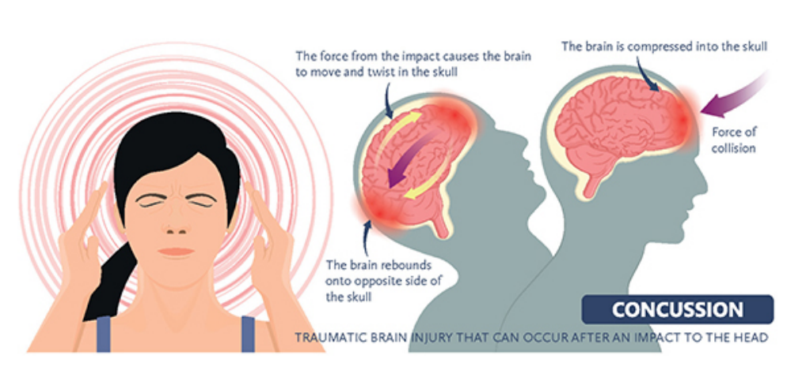
Hình 9.1 Chấn thương sọ não có thể bao gồm tổn thương tại chỗ và tổn thương đối bên.
Một người bị tổn thương đối bên cũng có thể bị tổn thương sợi trục lan tỏa. Trong dạng chấn thương não này, các sợi trục của tế bào thần kinh bị đứt rách do lực mạnh khi não dịch chuyển bên trong hộp sọ (Hình 9.2). Tổn thương sợi trục lan tỏa thường dẫn đến hôn mê và gây hại cho nhiều vùng của não.
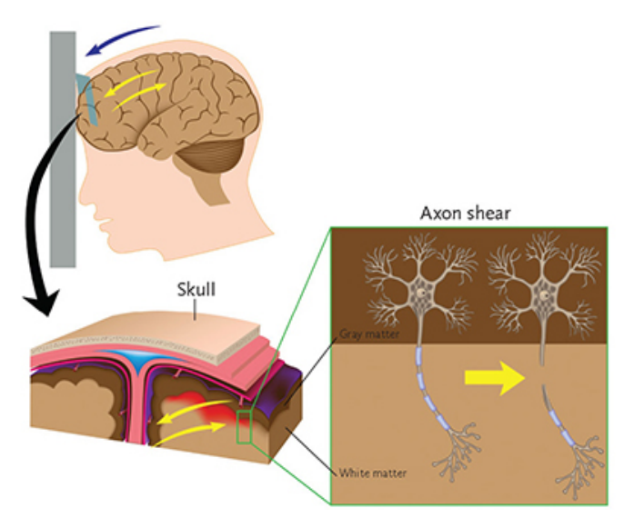
Hình 9.2 Tổn thương sợi trục lan tỏa khi các sợi trục của tế bào thần kinh bị đứt rách.
Mặc dù TBI có thể xảy ra ngay lập tức sau tai nạn, gọi là tổn thương nguyên phát, nhưng tổn thương não thứ phát có thể xuất hiện hàng giờ hoặc thậm chí nhiều ngày sau sự việc. Tổn thương não thứ phát thường diễn ra ở cấp độ vi mô và liên quan đến những biến đổi ở tế bào hoặc mạch máu dẫn đến hư hại thêm. Một trong những ví dụ nổi tiếng nhất về tổn thương não thứ phát xảy ra vào năm 2009 khi nữ diễn viên Natasha Richardson bị ngã lúc trượt tuyết ở Canada. Lúc đó cô không đội mũ bảo hiểm. Ban đầu, theo ghi nhận cô cảm thấy bình thường, nhưng một hoặc hai giờ sau cú ngã, cô bị đau đầu dữ dội nên đã phải đến bệnh viện. Không may, cô qua đời hai ngày sau đó do bị tụ máu ngoài màng cứng, một dạng xuất huyết não khi máu tích tụ giữa hộp sọ và lớp màng ngoài dày bao bọc não. Câu chuyện của cô đã thu hút sự chú ý trên toàn quốc về tầm quan trọng của việc điều trị và phòng ngừa TBI (Stump, 2009).
Mức độ nghiêm trọng của chấn thương sọ não trải dài trên một phổ rộng, từ bầm dập nhẹ đến biến cố đe dọa tính mạng. Tùy thuộc vào mức độ và loại TBI, người bệnh có thể gặp nhiều triệu chứng khác nhau, bao gồm suy giảm nhận thức, vấn đề về vận động, thay đổi giác quan, khó nói, suy giảm kỹ năng xã hội và thay đổi nhân cách, cùng nhiều biểu hiện khác (Johns Hopkins Medicine, 2022). TBI thường vô hình đối với người khác, nên những người sống sót sau chấn thương có thể cảm thấy bị cô lập, hiểu lầm và gặp khó khăn trong việc tìm kiếm sự chăm sóc thấu cảm.
Các nhà khoa học tin rằng một khi tế bào não bị tổn thương hoặc phá hủy, chúng rất khó tự lành hoặc tái tạo. Tuy nhiên, não bộ con người có tính mềm dẻo. Trong một số trường hợp, các kết nối giữa các tế bào thần kinh có thể được định tuyến lại sang những vùng não không bị tổn thương để phục hồi chức năng (Johns Hopkins Medicine, 2022). Đối với những người bị chấn thương nặng, quá trình hồi phục có thể đòi hỏi phục hồi chức năng suốt đời, vì vậy việc tìm ra các phương pháp điều trị hiệu quả là điều cấp thiết. Các phương pháp thực hành chiêm nghiệm là một công cụ hữu hiệu giúp giảm triệu chứng và cải thiện chất lượng cuộc sống cho nhiều người sống sót sau TBI.
Yoga và thiền định cho người bị TBI: Yoga và thiền định đã được chứng minh là giúp cải thiện các triệu chứng của TBI nhẹ qua nhiều nghiên cứu. Các nhà nghiên cứu từ Đại học Connecticut đã tổng quan 20 nghiên cứu với tổng cộng 539 người tham gia và nhận thấy rằng thiền định, yoga và các can thiệp dựa trên chánh niệm có thể cải thiện đáng kể sức khỏe tinh thần và thể chất, chất lượng cuộc sống và hiệu suất nhận thức, đồng thời làm giảm các triệu chứng mệt mỏi và trầm cảm ở những người bị chấn thương sọ não nhẹ (Acabchuk et al., 2020).
Quỹ LoveYourBrain, có trụ sở tại Vermont, là một trong những tổ chức hàng đầu cung cấp yoga, thiền định, kết nối cộng đồng và giáo dục cho những người từng trải qua TBI. Tổ chức này được sáng lập bởi vận động viên trượt ván tuyết chuyên nghiệp Kevin Pearce, người đã bị TBI nặng khi đang tập luyện cho Thế vận hội Mùa đông 2010. Kevin Pearce cùng anh trai là Adam Pearce đã quyết định xây dựng một chương trình yoga và thiền định kéo dài sáu tuần dựa trên khoa học và cộng đồng để giúp đỡ những người khác từng bị TBI.
Một số nghiên cứu học thuật đã được thực hiện về tác động của chương trình LoveYourBrain Yoga đối với những người sống sót sau TBI và người chăm sóc họ. Một nghiên cứu quy mô lớn (1.563 người tham gia) cho thấy việc tham gia chương trình LoveYourBrain đã mang lại sự cải thiện đáng kể về chất lượng cuộc sống cảm nhận, trạng thái an lạc và nhận thức (Donnelly et al., 2019). Ngoài ra, những người sống sót sau TBI có khả năng điều tiết mức độ lo âu, tức giận, căng thẳng và tính bốc đồng tốt hơn sau chương trình yoga. Những người chăm sóc, vốn cũng thường xuyên chịu mức độ căng thẳng cao, cũng ghi nhận sự cải thiện về sức khỏe thể chất và tâm lý sau khi tham gia chương trình.
Trong một nghiên cứu định tính riêng biệt, các nhà nghiên cứu đã phỏng vấn những người tham gia chương trình LoveYourBrain Yoga và nhận thấy rằng người sống sót sau TBI cùng người chăm sóc của họ cảm thấy gắn kết hơn, hòa nhập cộng đồng tốt hơn, sức khỏe thể chất cải thiện, khả năng tự điều chỉnh cao hơn và sức bật tinh thần tăng lên (Donnelly, Goldberg and Fournier, 2019).
Lưu ý khi hướng dẫn người từng bị TBI
Sử dụng các động tác đơn giản, chậm rãi và lặp đi lặp lại, vì người bị TBI đôi khi tiếp nhận thông tin và hướng dẫn với nhịp độ khác biệt. Thường xuyên nhắc lại hiệu lệnh. Tạo một không gian an toàn và chào đón tất cả mọi người trong phòng tập. Hãy nhớ rằng những người từng bị TBI thường cảm thấy bị tách biệt khỏi cộng đồng, vì vậy hãy nỗ lực hơn để tạo sự hòa nhập. Ngoài ra, việc giảm ánh sáng và giữ tiếng ồn ở mức tối thiểu có thể giúp họ cảm thấy thoải mái hơn. Hướng dẫn cẩn thận vị trí của đầu trong các động tác để tránh căng mỏi cổ. Lưu ý rằng một số cá nhân có thể đã nhận được chỉ dẫn cụ thể về tư thế đầu từ bác sĩ điều trị. Làm mẫu động tác và chuỗi động tác khi có thể. Điều này giúp họ dễ theo dõi hơn, đặc biệt nếu đó là tư thế mới. Sử dụng dụng cụ hỗ trợ và hướng dẫn cách dùng đúng cách. Dụng cụ hỗ trợ có thể là công cụ quý giá giúp định vị và nâng đỡ cơ thể đúng chuẩn.
Phỏng theo tài liệu của LoveYourBrain với sự cho phép.
Điểm chính cần nhớ
Chấn thương sọ não (TBI) là một tổn thương ở đầu gây hại cho não. Loại TBI phổ biến nhất là chấn thương sọ não kín, xảy ra khi có sự thay đổi chuyển động đột ngột của đầu gây bầm tím hoặc rách mô não và mạch máu. Yoga và thiền định có thể cải thiện chất lượng cuộc sống, nhận thức, tình trạng mệt mỏi và trầm cảm. Các phương pháp thực hành này cũng có thể tăng cường sức bật tinh thần và khả năng tự điều chỉnh.
ĐỘT QUỴ
Đột quỵ là một trong những nguyên nhân hàng đầu gây khuyết tật lâu dài tại Hoa Kỳ, và khoảng 800.000 người Mỹ bị đột quỵ mỗi năm, theo Trung tâm Kiểm soát và Phòng ngừa Dịch bệnh (CDC, 2022a). Đột quỵ xảy ra khi một phần của não ngừng nhận được dòng máu nuôi dưỡng. Có hai loại đột quỵ chính: 1) đột quỵ xuất huyết, xảy ra khi một mạch máu bị vỡ; và 2) đột quỵ thiếu máu cục bộ, khi một mạch máu bị tắc nghẽn (Hình 9.3). Tình trạng thiếu oxy đến mô não có thể gây tổn thương hoặc chết tế bào. Khoảng 87 phần trăm các ca đột quỵ là đột quỵ thiếu máu cục bộ.
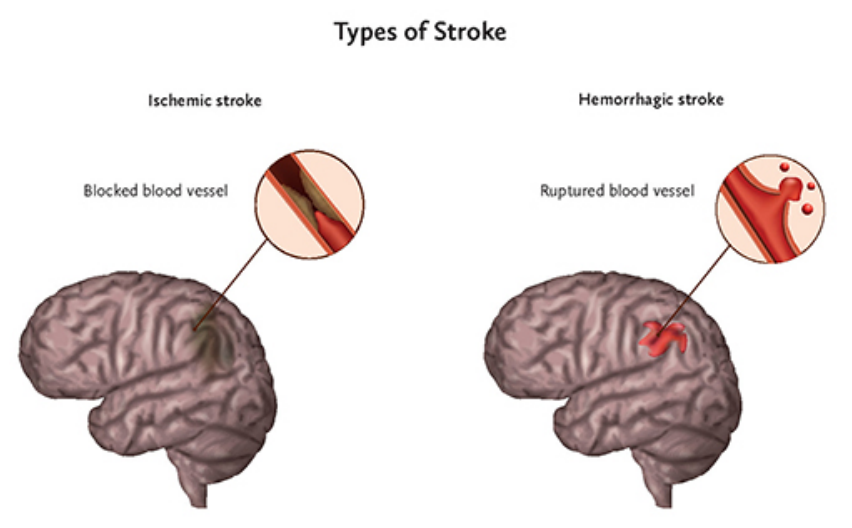
Hình 9.3 Hai loại đột quỵ chính.
Đột quỵ có thể xảy ra ở bất kỳ vùng nào của não; do đó, các triệu chứng hậu đột quỵ có thể thay đổi rất lớn tùy thuộc vào vị trí tổn thương. Ví dụ, một người có thể gặp khó khăn khi nói trong khi người khác lại gặp vấn đề về trí nhớ. Đột quỵ cũng có thể ảnh hưởng đến vận động và dẫn đến khó giữ thăng bằng.
Ngành khoa học thần kinh có một lịch sử lâu dài trong việc khảo sát những thay đổi của não sau đột quỵ. Trước khi các kỹ thuật chẩn đoán hình ảnh thần kinh ra đời, các nhà khoa học thần kinh thường nghiên cứu não của bệnh nhân đột quỵ để xem điều gì xảy ra với hành vi của họ khi một số vùng não nhất định bị phá hủy do thiếu máu nuôi.
Tư thế trồng chuối bằng đầu có cải thiện lưu lượng máu lên não không? Trong các lớp yoga, người ta thường cho rằng thực hiện tư thế trồng chuối bằng đầu giúp tăng cường lưu lượng máu lên não; tuy nhiên, thực tế không phải như vậy.
Lưu lượng máu lên não được điều hòa rất chặt chẽ, và việc thực hiện tư thế trồng chuối bằng đầu sẽ không làm tăng hoặc giảm đáng kể lưu lượng này, theo một nghiên cứu gần đây (Minvaleev et al., 2019). Trong nghiên cứu, các nhà khoa học đã đo lưu lượng máu ở động mạch cảnh trong bằng siêu âm ở 20 người đang thực hiện tư thế trồng chuối bằng đầu. Họ phát hiện rằng khi mới bắt đầu trồng chuối, lưu lượng máu lên não thực chất bị giảm xuống, sau đó quay trở lại mức cơ bản. Kết quả này nhiều khả năng là nhờ cơ chế tự điều hòa, giúp duy trì dòng máu lên não ổn định bất kể tư thế cơ thể. Mặc dù sự thay đổi tư thế ban đầu có gây biến động dòng máu, cơ thể nhanh chóng điều chỉnh để giữ lưu lượng máu ổn định.
Hình 9.4 Tư thế trồng chuối bằng đầu không làm tăng lưu lượng máu lên não.
Nguồn: Annemiek Smegen trên Unsplash.
Yoga cho người bị đột quỵ: Hiện có rất ít nghiên cứu khảo sát cách yoga có thể cải thiện khả năng vận động và chất lượng cuộc sống ở những người sống sót sau đột quỵ. Các nhà khoa học từ Đại học Glasgow Caledonian ở Vương quốc Anh đã tổng quan hai thử nghiệm đối chứng ngẫu nhiên với 72 người tham gia và nhận thấy yoga giúp cải thiện trí nhớ nhưng không cải thiện các khía cạnh thể chất, cảm xúc, xã hội hay giao tiếp trong quá trình hồi phục (Lawrence et al., 2017). Đáng tiếc là dữ liệu từ hai nghiên cứu này chưa đủ để khẳng định hay bác bỏ hiệu quả của yoga như một liệu pháp cho đột quỵ. Hơn nữa, cả hai nghiên cứu đều có chất lượng thấp và nguy cơ sai lệch cao. Tuy nhiên, các tác giả nhấn mạnh rằng yoga vẫn nên tiếp tục được nghiên cứu như một công cụ tiềm năng hữu ích cho phục hồi chức năng sau đột quỵ.
Một tổng quan khác gồm năm thử nghiệm đối chứng ngẫu nhiên do các nhà nghiên cứu tại Đại học Monash ở Úc thực hiện cho thấy yoga cải thiện khả năng thăng bằng và chất lượng cuộc sống, dù các kết quả này chưa đạt ý nghĩa thống kê (Thayabaranathan et al., 2017). Tuy nhiên, yoga đã giúp giảm đáng kể các triệu chứng lo âu và trầm cảm khi so sánh với nhóm đối chứng, gợi ý những lợi ích về sức khỏe tâm thần.
Tập trung nhiều hơn vào các lợi ích tâm lý của việc tập yoga, các nhà nghiên cứu từ Đại học Nam Úc đã phỏng vấn chín người sống sót sau đột quỵ sau khi họ hoàn thành chương trình can thiệp yoga và thiền định kéo dài mười tuần (Garrett, Immink and Hillier, 2011). Nhìn chung, những người tham gia cảm thấy bình tĩnh hơn và kết nối với cơ thể mình hơn sau chương trình yoga và thiền định. Họ cũng báo cáo cảm nhận được sự cải thiện về sức mạnh và khả năng vận động. Nghiên cứu này nhấn mạnh rằng dù bằng chứng hiện tại về yoga như một phương pháp điều trị đột quỵ có thể chưa thật mạnh, yoga vẫn có thể là công cụ hữu ích để cải thiện sức khỏe tâm lý và thể chất.
Yoga trên ghế là một hình thức yoga thích ứng phổ biến, trong đó các tư thế được thực hiện khi ngồi hoặc có sự hỗ trợ của ghế hoặc xe lăn. Yoga trên ghế dễ tiếp cận và dễ điều chỉnh hơn so với yoga trên thảm. Quan trọng hơn, yoga trên ghế loại bỏ những rào cản thể chất mà một số người gặp phải ở các loại hình yoga khác.
CÁC BÀI TẬP YOGA TRÊN GHẾ CHO NGƯỜI SỐNG SÓT SAU ĐỘT QUỴ
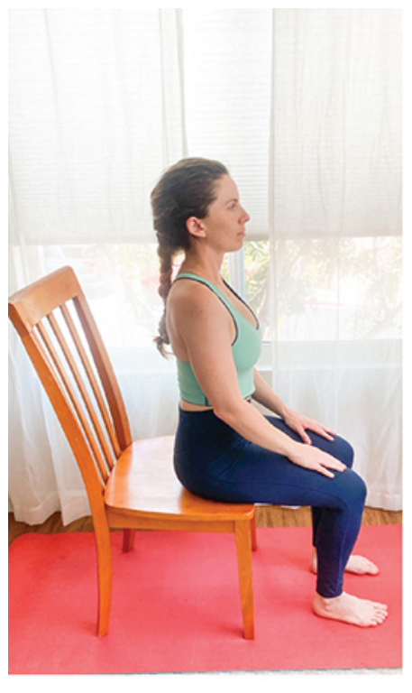
Hình 9.5 Tư thế ngồi trên ghế.
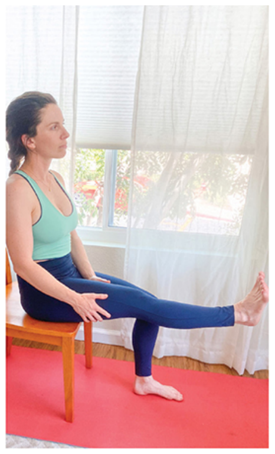
Hình 9.6 Nâng chân.
Hình 9.7 Biến thể nâng chân với tay và chân đối diện cùng nâng lên.
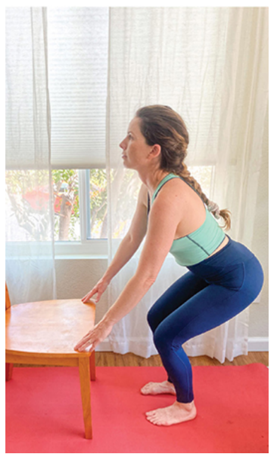
Hình 9.8 Tư thế cái ghế với hai tay dùng để giữ thăng bằng.
Hình 9.9 Ngồi vặn xoắn cột sống.
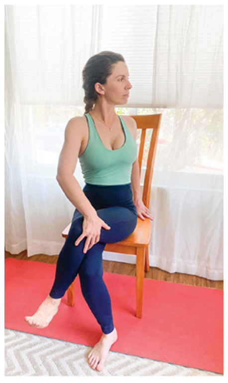
Hình 9.10 Biến thể ngồi vặn xoắn cột sống.
Thiền định cho người bị đột quỵ: Thiền định có thể làm giảm nguy cơ đột quỵ nhờ hạ huyết áp và giảm căng thẳng (Larkin, 2000), nhưng rất ít nghiên cứu xem xét tác động của thiền định đối với việc cải thiện các triệu chứng sau đột quỵ.
Một nghiên cứu thí điểm đã khảo sát cách một chương trình thiền định kéo dài hai tuần có thể ảnh hưởng đến chất lượng cuộc sống và tình trạng co cứng cơ ở những người sống sót sau đột quỵ (Wathugala et al., 2019). Co cứng cơ là sự co thắt bất thường của cơ bắp, có thể cản trở vận động. Trong nghiên cứu, mười người tham gia đã nghe các bản thu âm thiền chánh niệm ngắn, điền bảng câu hỏi và viết nhật ký. Những người tham gia báo cáo có sự cải thiện về tình trạng co cứng cơ, năng lượng và năng suất làm việc, cho thấy ngay cả một can thiệp thiền định ngắn cũng có thể giúp ích cho những người đang hồi phục sau đột quỵ.
Điểm chính cần nhớ
Đột quỵ xảy ra khi một phần của não ngừng nhận được máu. Hai loại đột quỵ chính là đột quỵ xuất huyết (khi một mạch máu bị vỡ) và đột quỵ thiếu máu cục bộ (khi một mạch máu bị tắc nghẽn). Tư thế trồng chuối bằng đầu không làm tăng lưu lượng máu lên não. Các can thiệp yoga có thể giúp cải thiện trí nhớ, sức mạnh, khả năng vận động, thăng bằng và chất lượng cuộc sống, đồng thời giảm các triệu chứng lo âu và trầm cảm. Thiền định là một phương pháp hiệu quả để giảm nguy cơ đột quỵ và có thể giúp giảm tình trạng co cứng cơ xảy ra sau đột quỵ.
BỆNH ĐA XƠ CỨNG
Bệnh đa xơ cứng (MS) là bệnh lý thần kinh gây tàn phế phổ biến nhất ở người trưởng thành trẻ tuổi từ 20–40 tuổi, và phụ nữ mắc bệnh nhiều hơn nam giới. MS là một bệnh tự miễn của hệ thần kinh trung ương (não và tủy sống), trong đó hệ miễn dịch tấn công nhầm vào lớp vỏ myelin bảo vệ xung quanh các sợi thần kinh trong hệ thần kinh trung ương (Hình 9.11).
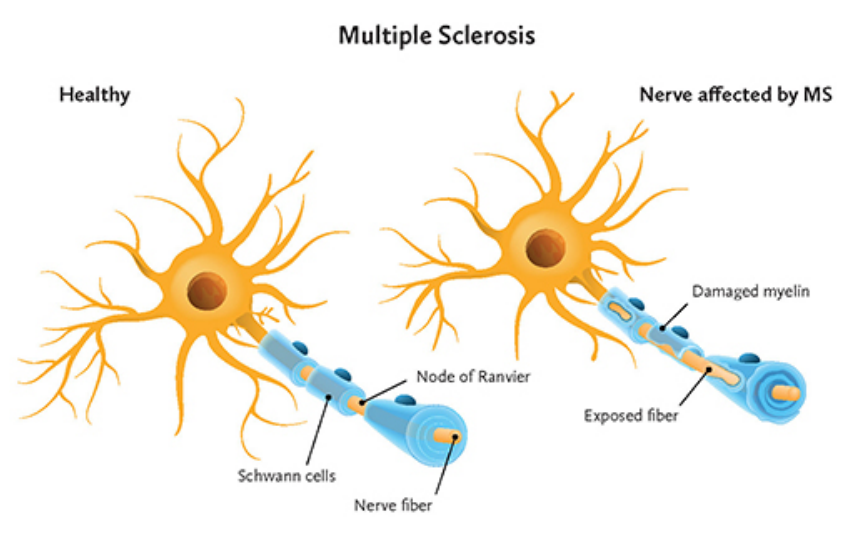
Hình 9.11 Lớp vỏ myelin xung quanh dây thần kinh bị tổn thương trong bệnh đa xơ cứng.
Khi lớp myelin bị phá hủy, các tín hiệu điện không thể truyền đi đủ nhanh và xảy ra lỗi truyền tin. Tình trạng này có thể gây trục trặc giao tiếp giữa não và phần còn lại của cơ thể, dẫn đến yếu cơ, tê bì, châm chích, đau mạn tính, run, rối loạn thị giác, mệt mỏi và nhiều triệu chứng khác. Các triệu chứng của MS có thể khác nhau rất nhiều ở mỗi người tùy thuộc vào mức độ tổn thương thần kinh, cũng như vị trí và loại dây thần kinh bị ảnh hưởng. Một số người có rất ít hoặc chỉ có triệu chứng kín đáo, trong khi những người khác gặp khó khăn khi tự di chuyển hoặc không thể di chuyển.
Mặc dù có bốn thể bệnh MS chính, dạng phổ biến nhất được gọi là thể tái phát – thuyên giảm. Người bệnh trải qua những đợt xuất hiện triệu chứng kéo dài nhiều ngày hoặc nhiều tuần (đợt tái phát) và sau đó là những khoảng thời gian dài triệu chứng cải thiện hoặc biến mất (giai đoạn thuyên giảm). Những thăng trầm này có thể gây thử thách về thể chất và vắt kiệt tinh thần. Dù thể bệnh MS có thể thay đổi trong suốt cuộc đời người bệnh, khoảng 85 phần trăm bệnh nhân MS ban đầu được chẩn đoán mắc thể tái phát – thuyên giảm (National Multiple Sclerosis Society, 2022).
Yoga cho bệnh đa xơ cứng
Yoga mang lại nhiều hứa hẹn trong việc hỗ trợ điều trị MS vì có thể cải thiện tình trạng mệt mỏi, tâm trạng, độ dẻo dai và biên độ vận động. Do các triệu chứng của MS có thể bao gồm vấn đề về thăng bằng và phối hợp vận động, yoga thích ứng có thể là một lựa chọn tuyệt vời. Yoga thích ứng điều chỉnh loại hình và phong cách tập luyện phù hợp với từng cá nhân để đáp ứng nhu cầu và khả năng luôn thay đổi của họ. Mục tiêu của lớp yoga dành cho người mắc MS là tăng cường hoặc duy trì biên độ vận động và sự dẻo dai đồng thời phòng ngừa chấn thương.
Lưu ý khi hướng dẫn học viên mắc bệnh đa xơ cứng
Khả năng thể chất của người mắc MS có thể thay đổi từng ngày, vì vậy hãy hỏi thăm học viên để nắm rõ nhu cầu và khả năng của họ trước mỗi buổi tập. Việc tập luyện có thể làm tăng nhiệt độ lõi của cơ thể, điều này có thể làm nặng thêm các triệu chứng MS. Hãy gợi ý các chuyển động chậm rãi, êm dịu và mang tính phục hồi thay vì những chuỗi động tác phức tạp. Đưa ra các biến thể để phù hợp với những mức độ khả năng khác nhau. Tạo ra một môi trường khuyến khích mọi người lắng nghe cơ thể mình. Kết hợp tư thế với bài tập thở để đưa nhận thức vào hơi thở nhằm tăng cường sự thư giãn. Những động tác đòi hỏi đứng lên ngồi xuống liên tục, chẳng hạn như chuỗi Chào Mặt Trời, có thể gây khó khăn cho người mắc MS. Thay vào đó, hãy tập trung bài tập ở cùng một mặt phẳng hoặc chuyển tiếp chậm rãi giữa các độ cao và tư thế khác nhau.
CÁC BÀI TẬP YOGA TRÊN GHẾ CHO NGƯỜI MẮC BỆNH ĐA XƠ CỨNG
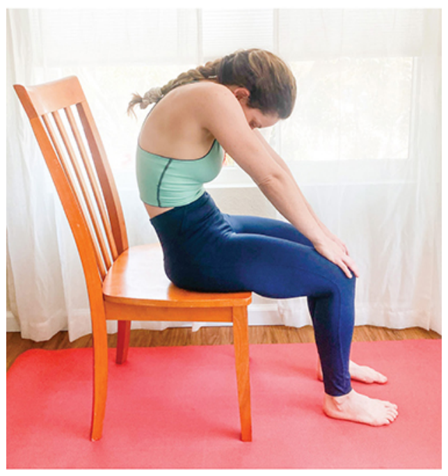
Hình 9.12 Tư thế con mèo trên ghế.
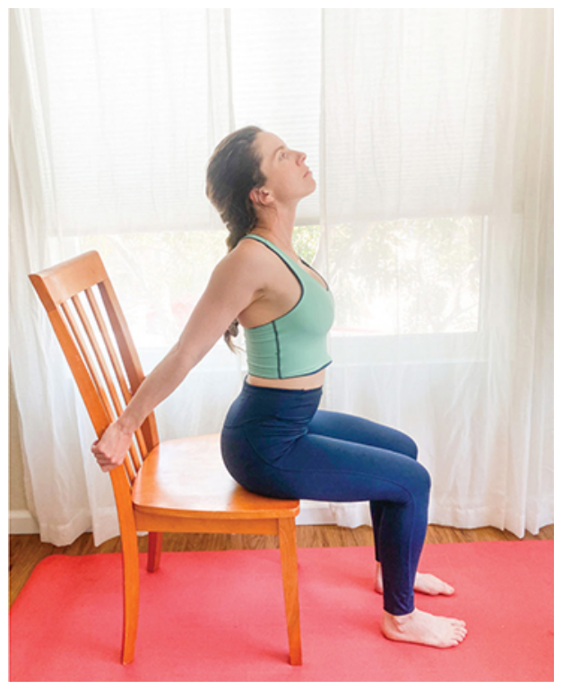
Hình 9.13 Tư thế con bò trên ghế.
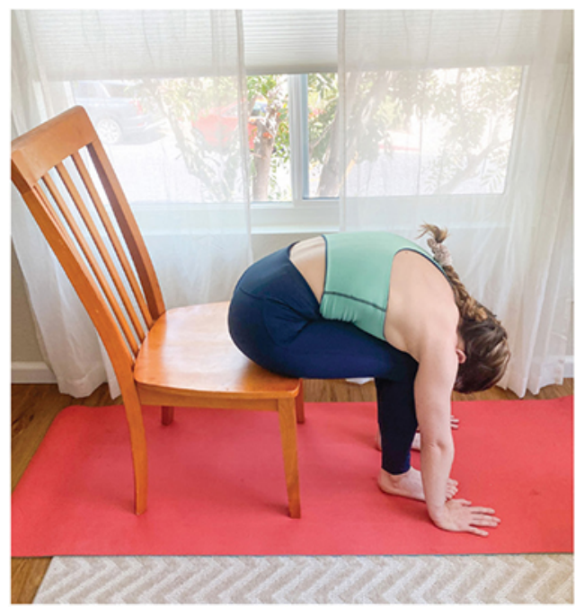
Hình 9.14 Gập người về trước.
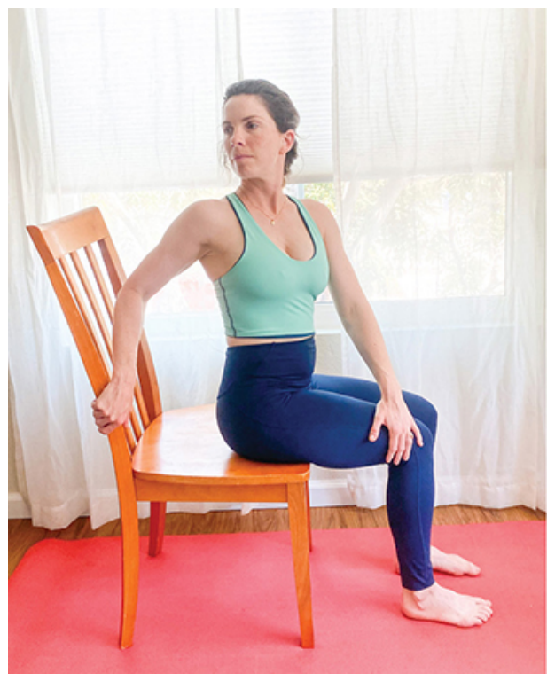
Hình 9.15 Vặn xoắn cột sống.
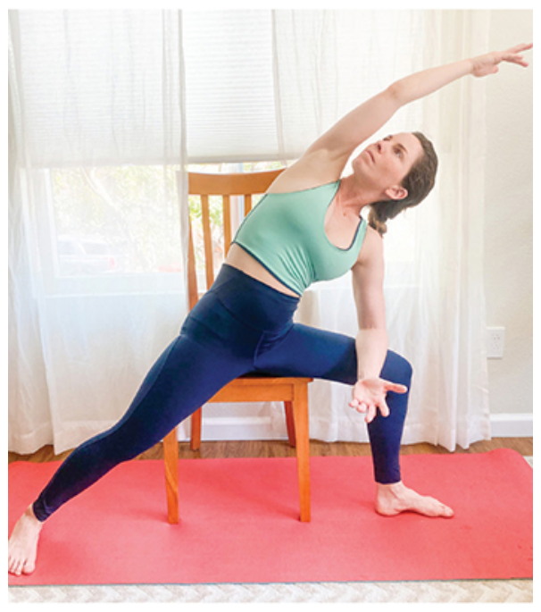
Hình 9.16 Tư thế góc nghiêng duỗi trên ghế.
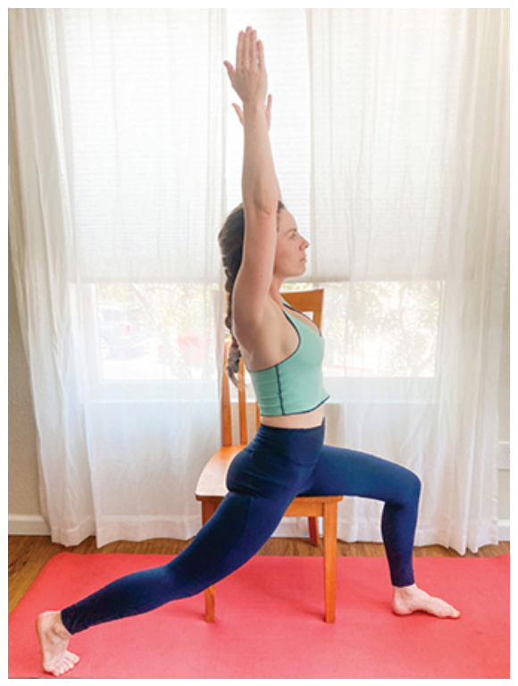
Hình 9.17 Tư thế trường tấn cao.
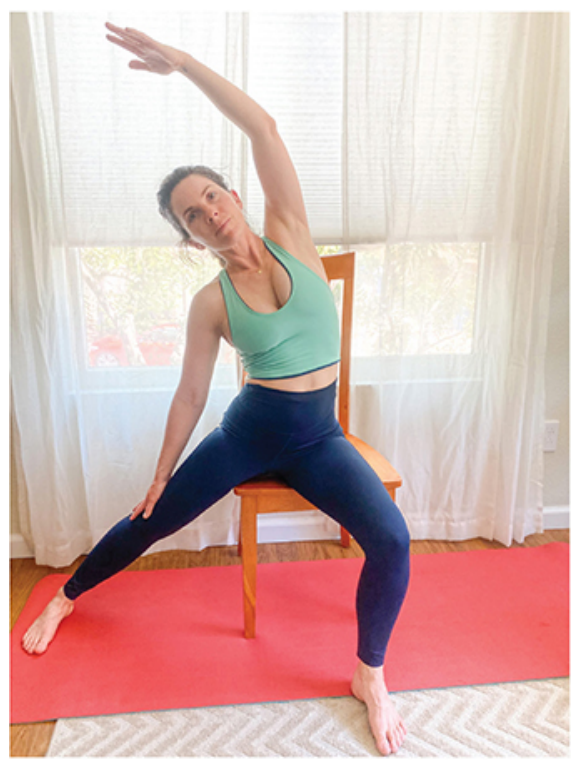
Hình 9.18 Biến thể nghiêng lườn trong tư thế Chiến binh II.
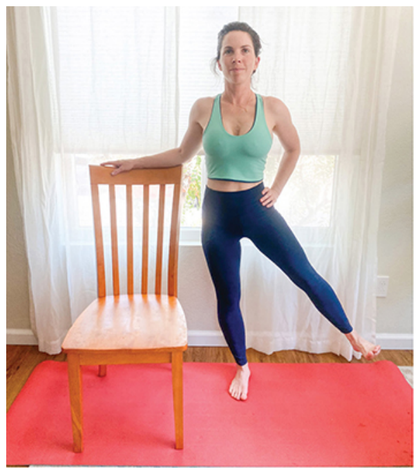
Hình 9.19 Nâng chân có hỗ trợ.
Thiền định cho bệnh đa xơ cứng: Tính khó lường của căn bệnh cùng các liệu trình điều trị kéo dài đối với MS đặt ra nhiều thách thức đặc thù. Bệnh nhân thường phải nằm yên bên trong máy chụp MRI ồn ào để quét não, một quá trình có thể gây căng thẳng và kéo dài hàng giờ. Căng thẳng có thể làm trầm trọng thêm các triệu chứng MS, khiến những tình huống này càng trở nên tệ hơn.
Các nhà nghiên cứu từ Đại học Melbourne, Úc đã tổng quan 12 nghiên cứu xem xét triển vọng của thiền định như một biện pháp can thiệp cho người mắc MS và nhận thấy thiền định có thể giúp cải thiện chất lượng cuộc sống và kỹ năng ứng phó (Levin et al., 2014). Một nghiên cứu khác do các nhà khoa học từ Đại học Công giáo Thánh Tâm (Università Cattolica del Sacro Cuore) ở Ý và Đại học Harvard thực hiện với 139 người tham gia cho thấy can thiệp thiền chánh niệm trực tuyến giúp cải thiện chất lượng cuộc sống và giảm các triệu chứng trầm cảm, lo âu và rối loạn giấc ngủ ở bệnh nhân nhiều hơn so với nhóm đối chứng được giáo dục tâm lý (Cavalera et al., 2018). Can thiệp chánh niệm kéo dài hai tháng này dựa trên phác đồ giảm căng thẳng dựa trên chánh niệm (MBSR) truyền thống do Jon Kabat-Zinn phát triển và được điều chỉnh riêng cho bệnh nhân MS. Chẳng hạn, các tác giả đã lồng ghép thiền âm nhạc và các buổi thảo luận về việc chấp nhận triệu chứng MS. Dù có những lợi ích tức thì sau tám tuần can thiệp, các nhóm không còn khác biệt đáng kể ở lần theo dõi sau sáu tháng. Phát hiện này cho thấy thiền chánh niệm cần được thực hành đều đặn để duy trì hiệu quả có lợi.
Điểm chính cần nhớ
Bệnh đa xơ cứng (MS) là một bệnh tự miễn của hệ thần kinh trung ương, trong đó hệ miễn dịch tấn công nhầm vào lớp vỏ myelin bảo vệ xung quanh các sợi thần kinh. Yoga có thể cải thiện tình trạng mệt mỏi, tâm trạng, độ dẻo dai và biên độ vận động. Yoga trên ghế là một hình thức yoga dễ tiếp cận có thể điều chỉnh phù hợp với từng cá nhân. Thiền định có thể giúp cải thiện chất lượng cuộc sống và kỹ năng ứng phó ở người mắc MS. Nó cũng có thể giúp giảm căng thẳng, dù lợi ích có thể không kéo dài nếu ngừng thực hành.
Thiền thư giãn tập trung vào hơi thở
Hãy tìm một tư thế thoải mái. Bạn có thể nằm xuống hoặc ngồi thẳng trên ghế.
Bất kỳ tư thế nào mang lại cảm giác dễ chịu nhất cho bạn ngay lúc này.
Bắt đầu đưa sự chú ý về hơi thở. Quan sát hơi thở tự nhiên và thả lỏng theo nhịp điệu tự nhiên mà hơi thở mang lại. Nhận biết cách hơi thở đi vào và đi ra khỏi cơ thể. Êm ái.
Nhẹ nhàng không gắng sức. Cho phép hai tay và hai chân thư giãn, buông bỏ mọi căng cứng ở tứ chi. Bây giờ, hãy tăng cường nhận thức về các điểm tiếp xúc của cơ thể trên sàn hoặc trên ghế.
Cảm nhận cách cơ thể bạn đang tương tác và được nâng đỡ bởi môi trường xung quanh. Đưa sự chú ý trở lại hơi thở và cảm nhận luồng khí đi vào và đi ra qua hai lỗ mũi. Theo dõi dòng hơi thở đi vào và dòng hơi thở đi ra.
BỆNH ALZHEIMER
Bệnh Alzheimer là một chứng sa sút trí tuệ cuối cùng dẫn đến tử vong và hiện chưa có phương pháp điều trị hiệu quả. Mặc dù bệnh Alzheimer phổ biến, đây không phải là một phần bình thường của quá trình lão hóa. Bệnh Alzheimer gây mất chức năng hoặc chết tế bào thần kinh ở nhiều vùng não, dẫn đến mất trí nhớ và mất khả năng duy trì cuộc trò chuyện hay nhận biết môi trường xung quanh. Bất chấp nhiều thập kỷ nghiên cứu, hơn 95 phần trăm các ca bệnh Alzheimer vẫn chưa rõ nguyên nhân khởi phát. Tuy nhiên, phát hiện sớm và can thiệp kịp thời có thể giúp làm chậm quá trình thoái hóa thần kinh.
Tuổi tác là yếu tố nguy cơ lớn nhất đối với bệnh Alzheimer, và có bằng chứng mạnh mẽ cho thấy di truyền đóng một vai trò quan trọng (Kunkle et al., 2019). Các yếu tố khác, như chế độ ăn uống, trình độ học vấn và vận động thể chất, cũng có thể ảnh hưởng đến sự phát triển của bệnh Alzheimer.
Có hai dấu ấn sinh học chính liên quan đến căn bệnh này. Dấu ấn thứ nhất là các mảng amyloid beta, vốn là những mảnh của protein tiền chất amyloid – một loại protein màng có trong nhiều mô và tại các khớp thần kinh. Protein amyloid beta có thể tích tụ trong não để tạo thành các mảng bám trong khoảng không gian xung quanh tế bào thần kinh. Dù các nhà khoa học chưa hiểu hoàn toàn cơ chế, dường như các mảng amyloid beta dẫn đến chết tế bào, thay đổi chuyển hóa và gia tăng tình trạng viêm trong não. Những yếu tố này có thể khiến não hoạt động bất thường. Tuy nhiên, một số người có tích tụ mảng amyloid beta nhưng lại không phát triển bệnh Alzheimer.
Dấu ấn sinh học đáng chú ý còn lại được gọi là tau, một loại protein cấu trúc bên trong tế bào thần kinh. Ở bệnh Alzheimer, protein tau bắt đầu kết tụ bất thường thành các đám rối, được cho là gây hư hại cấu trúc của tế bào thần kinh. Quá trình này nhiều khả năng dẫn đến suy giảm chức năng và chết tế bào thần kinh.
Những dấu ấn sinh học này có thể được sử dụng để xác định giai đoạn bệnh, giúp bác sĩ lựa chọn hướng điều trị Alzheimer tốt nhất. Nhiều thử nghiệm lâm sàng đang được tiến hành để kiểm nghiệm các phương pháp điều trị tiềm năng. Một loại thuốc có tên CMS121 đã được các nhà khoa học tại Viện Salk phát triển và nghiên cứu trong suốt mười lăm năm qua. CMS121, có nguồn gốc từ một hợp chất tự nhiên tìm thấy trong dâu tây, giúp đảo ngược các dấu hiệu lão hóa trong não và ngăn ngừa tình trạng mất trí nhớ liên quan đến Alzheimer ở chuột (Ates et al., 2020). Thuốc hiện đang trải qua các thử nghiệm lâm sàng để đánh giá hiệu quả trên người.
Ngoài ra còn có giả thuyết về sự rò rỉ hàng rào não trong bệnh Alzheimer liên quan đến một trong những hệ thống phòng thủ hàng đầu của não: hàng rào máu – não. Hàng rào máu – não là một bộ lọc giữa các mạch máu não và mô não, có nhiệm vụ bảo vệ não trước vi khuẩn, virus và độc tố có thể gây nhiễm trùng hoặc tổn thương não, đồng thời vẫn cho phép các dưỡng chất quan trọng đi qua.
Các nhà nghiên cứu phát hiện ra rằng căng thẳng có thể khiến hàng rào máu – não bị “rò rỉ” (Friedman et al., 1996). Hàng rào máu – não cũng trở nên dễ rò rỉ hơn theo tuổi tác, cho phép các protein như albumin xâm nhập vào não (Senatorov et al., 2019). Những thay đổi này dẫn đến tăng tình trạng viêm, hoạt động thần kinh bất thường và suy giảm nhận thức – tất cả đều xuất hiện trong bệnh Alzheimer. Cũng nhóm nghiên cứu này nhận thấy rằng việc cho chuột dùng thuốc bảo vệ hàng rào đã ngăn không cho protein albumin xâm nhập vào não, làm giảm viêm và cải thiện nhận thức. Họ nghi ngờ rằng trục trặc ở bộ lọc này có thể gây ra nhiều loại bệnh lý thần kinh khác nhau, bao gồm cả bệnh Alzheimer.
Vì sao có quá ít phương pháp điều trị bệnh Alzheimer? Hàng rào máu – não ban đầu được bác sĩ người Đức Paul Ehrlich phát hiện khi ông tiêm thuốc nhuộm vào mạch máu của một con chuột. Ông ngạc nhiên khi thấy thuốc nhuộm lan khắp cơ thể con vật nhưng không xâm nhập vào não và tủy sống. Ehrlich đưa ra giả thuyết rằng hẳn phải tồn tại một hàng rào vô hình trong cơ thể để bảo vệ hệ thần kinh trung ương.
Sau đó, vào những năm 1960, các nhà khoa học đã có thể sử dụng kính hiển vi công suất lớn để quan sát chi tiết hàng rào máu – não. Họ phát hiện các tế bào nội mô lót thành mạch máu với những liên kết chặt giữa từng tế bào. Hàng rào máu – não rất hiệu quả trong việc ngăn chặn các tác nhân gây bệnh không mong muốn xâm nhập vào não. Đáng tiếc là hàng rào này cũng chặn luôn cả các loại thuốc và liệu pháp điều trị Alzheimer.
Các nhà khoa học hiện đang cố gắng tìm cách vượt qua hàng rào máu – não để đưa các loại thuốc có lợi vào trong. Trong một phương pháp gọi là “cách tiếp cận con ngựa thành Troy”, một loại thuốc được gắn kết với một phân tử có thể đi qua hàng rào máu – não một cách an toàn. Một lựa chọn khác là sử dụng sóng siêu âm để mở tạm thời hàng rào máu – não cho thuốc đi vào. Cả hai phương pháp đều đang được nghiên cứu và hy vọng sẽ mở ra những lựa chọn điều trị mới trong tương lai.
Yoga cho bệnh Alzheimer: Đã có một số nghiên cứu được công bố về tác động của các phương pháp thực hành liên quan đến yoga đối với người bị suy giảm nhận thức nhẹ, sa sút trí tuệ và suy giảm nhận thức (Brenes et al., 2019; Bhattacharyya, Andel and Small, 2021). Các nhà nghiên cứu tại Trường Y Wake Forest đã tổng quan 12 nghiên cứu khảo sát tác động của yoga đối với người bị suy giảm nhận thức nhẹ và sa sút trí tuệ (Brenes et al., 2019). Qua các nghiên cứu, họ nhận thấy việc tập yoga giúp cải thiện chức năng nhận thức, giấc ngủ, tâm trạng và có thể cả khả năng kết nối thần kinh.
Chức năng nhận thức được cải thiện bao gồm trí nhớ và sự chú ý, cả hai đều có thể bị ảnh hưởng nghiêm trọng trong chứng suy giảm nhận thức nhẹ và sa sút trí tuệ. Rối loạn giấc ngủ cũng rất phổ biến, và sự gián đoạn giấc ngủ có thể ảnh hưởng đến chức năng nhận thức vì quá trình củng cố trí nhớ phần lớn diễn ra trong khi ngủ. Yoga đã được chứng minh giúp cải thiện chất lượng giấc ngủ cũng như số giờ ngủ. Vì vậy, yoga có thể đóng vai trò trung gian cải thiện chức năng nhận thức thông qua việc nâng cao chất lượng giấc ngủ (Brenes et al., 2019).
Các rối loạn tâm trạng, chẳng hạn như lo âu và trầm cảm, thường đi kèm với suy giảm nhận thức nhẹ và sa sút trí tuệ. Năm trong số các nghiên cứu được tổng quan ghi nhận sự cải thiện về triệu chứng lo âu và trầm cảm sau can thiệp yoga. Các tác giả chỉ ra rằng việc giảm các triệu chứng tâm thần này có khả năng giúp giảm tình trạng kiệt sức ở người chăm sóc (Brenes et al., 2019). Dù các nghiên cứu sử dụng nhiều phong cách yoga và phác đồ can thiệp khác nhau, yoga dường như là một công cụ an toàn và có lợi cho việc cải thiện sức khỏe ở những người bị suy giảm nhận thức nhẹ và sa sút trí tuệ.
Một tổng quan gần đây khác do các nhà nghiên cứu từ Khoa Nghiên cứu Lão hóa tại Đại học Nam Florida thực hiện đã phân tích 11 thử nghiệm đối chứng ngẫu nhiên khảo sát tác động của các liệu pháp tâm – thân liên quan đến yoga lên chức năng nhận thức trong bối cảnh lão hóa (Bhattacharyya, Andel and Small, 2021). Hơn 900 người tham gia đã được đưa vào các nghiên cứu. Không có tác dụng phụ nào được ghi nhận ở bất kỳ nghiên cứu nào, và kết quả cho thấy các liệu pháp liên quan đến yoga giúp cải thiện trí nhớ, chức năng điều hành, sự chú ý và tốc độ xử lý thông tin ở người lớn tuổi có và không có suy giảm nhận thức.
Những bài tổng quan này cung cấp bằng chứng sơ bộ cho thấy yoga có thể là một phương pháp hiệu quả giúp cải thiện sức khỏe ở người bị suy giảm nhận thức nhẹ, sa sút trí tuệ và suy giảm nhận thức. Các nghiên cứu trong tương lai cần được tiến hành để xem liệu những kết quả này có đúng với đối tượng mắc bệnh Alzheimer cụ thể hay không.
Thiền định cũng có thể mang lại lợi ích nhờ làm giảm căng thẳng và tình trạng viêm. Nồng độ cao của hormone căng thẳng cortisol có thể gây hại cho trung tâm trí nhớ của não là hồi hải mã. Giảm căng thẳng có thể làm giảm lượng tổn thương tích lũy ở hồi hải mã và có khả năng làm chậm hoặc ngăn chặn sự suy thoái trí nhớ – dấu hiệu đặc trưng của bệnh Alzheimer. Một nghiên cứu nhỏ trên 14 người tham gia ghi nhận xu hướng ít chết tế bào hồi hải mã hơn ở nhóm giảm căng thẳng dựa trên chánh niệm so với nhóm đối chứng (Wells et al., 2013).
Mặc dù mới chỉ có một số ít nghiên cứu về tác động của yoga và thiền định đối với chứng suy giảm nhận thức nhẹ và sa sút trí tuệ, chúng dường như đều gợi ý rằng có những lợi ích nhất định. Cả yoga và thiền định đều an toàn và khả thi đối với nhóm người cao tuổi. Những nghiên cứu quy mô lớn hơn và chặt chẽ hơn vẫn cần được thực hiện để hiểu rõ toàn diện các tác động này.
Điểm chính cần nhớ
Bệnh Alzheimer là một chứng sa sút trí tuệ cuối cùng dẫn đến tử vong và chưa có phương pháp điều trị hiệu quả. Hàng rào máu – não là một bộ lọc giữa các mạch máu não và mô não. Hai dấu ấn sinh học chính liên quan đến bệnh Alzheimer là mảng amyloid beta và protein tau.
Di truyền, chế độ ăn uống, vận động, học vấn và sự phá vỡ hàng rào máu – não cũng có thể tác động đến sự phát triển của bệnh Alzheimer. Yoga có thể cải thiện trí nhớ, sự chú ý, giấc ngủ, tâm trạng, lo âu và trầm cảm. Thiền định có thể làm giảm tổn thương ở hồi hải mã bằng cách hạ mức độ căng thẳng tổng thể, từ đó làm giảm hormone căng thẳng cortisol.
ĐAU VÀ NÃO BỘ
Đau có thể là cấp tính, bắt nguồn từ một nguyên nhân tức thời, hoặc mạn tính, kéo dài hàng tuần, hàng năm hay thậm chí suốt đời. Đau là một hiện tượng phức tạp và không xuất phát từ một vùng não đơn lẻ. Thay vào đó, nó liên quan đến nhiều khu vực phối hợp cùng nhau để xử lý tín hiệu. Đau bao gồm cả thành phần thể chất lẫn cảm xúc; đau thể chất có thể là nguyên nhân gây ra căng thẳng tâm lý và cảm xúc, nhưng cũng có thể là hệ quả của chúng.
Đau thể chất sử dụng các tế bào thần kinh cảm nhận đau chuyên biệt gọi là thụ thể đau (nociceptor). Thụ thể đau phát hiện các kích thích gây tổn thương mô ở da hoặc các cơ quan nội tạng, chẳng hạn như bàng quang hoặc đường tiêu hóa (Blumenrath, 2020). Sự chạm nhẹ thông thường không kích hoạt thụ thể đau, nhưng việc vấp ngã thì có. Các thụ thể đau khác nhau phát hiện những loại đau riêng biệt, như đau do nhiệt (quá nóng hoặc quá lạnh), đau cơ học (vết thương) hoặc đau do hóa chất (độc tố). Thụ thể đau truyền thông điệp về cơn đau lên não qua những con đường khác nhau, tùy thuộc vào loại đau đang trải qua.
Thụ thể đau dựa vào các dây thần kinh gọi là sợi A-delta và sợi C để truyền thông tin. Các sợi A-delta được bao bọc bởi myelin (giống như nhiều tế bào thần kinh khác), nên tín hiệu đau truyền lên não rất nhanh; trong khi đó sợi C không có myelin nên thông điệp di chuyển chậm hơn. Sợi A-delta hữu ích trong việc truyền tải cơn đau sắc nhọn và đột ngột, còn sợi C chuyển tiếp thông tin về cơn đau âm ỉ, nhức nhối.
Tín hiệu đau đi đến tủy sống, sau đó tủy sống chuyển thông tin lên đồi thị trong não. Đồi thị đóng vai trò trạm trung chuyển và gửi thông điệp đến vỏ não để tạo ra trải nghiệm và nhận thức về cơn đau. Dù não bộ là một cơ quan tối tân, nó không phải lúc nào cũng xác định chính xác nguồn gốc cơn đau trong cơ thể. Một người đang lên cơn đau tim có thể cảm thấy “đau quy chiếu” ở cánh tay trái. Các nhà khoa học chưa rõ hoàn toàn nguyên nhân, nhưng có thể là do một số sợi dẫn truyền đau chồng chéo nhau trong tủy sống, dẫn đến sự đấu nối chéo tín hiệu.
Não bộ chịu ảnh hưởng của những yếu tố như sự chú ý, tâm trạng và trạng thái cảm xúc khi xử lý trải nghiệm đau (Bushnell, Čeko and Low, 2013). Ví dụ, việc dồn sự chú ý vào một vết thương có thể khiến cơn đau trở nên tồi tệ hơn. Nếu sự chú ý được chuyển hướng, cảm giác đau có thể giảm bớt. Sự chuyển hướng chú ý và giảm đau này có thể được khai thác thông qua thiền chánh niệm.
Nỗi đau cảm xúc cũng có thật không kém gì nỗi đau thể chất. Thực tế, các thuốc giảm đau thông thường như acetaminophen cũng làm dịu nỗi đau cảm xúc (Mischkowski, Crocker and Way, 2019). Việc điều hòa khía cạnh cảm xúc của cơn đau được cho là phụ thuộc vào một vùng trong thân não gọi là chất xám quanh cống (periaqueductal gray matter). Vùng não này làm tăng hoặc giảm cảm giác đau tùy theo trạng thái cảm xúc. Chẳng hạn, việc đồng cảm với nỗi đau của một người bạn có thể làm tăng cảm giác đau của chính chúng ta (Bushnell, Čeko and Low, 2013). Nỗi đau cảm xúc cũng đã được chứng minh là kích hoạt nhiều vùng não tương tự như nỗi đau thể chất (Kross et al., 2011).
Không phải mọi thông điệp về cơn đau đều truyền lên đến não. Việc vô tình chạm vào một chiếc chảo nóng sẽ kích hoạt phản xạ rụt tay lại. Hành động này diễn ra nhanh đến mức được xử lý mà không cần qua não. Thay vào đó, các tế bào thần kinh cảm giác gửi tín hiệu từ bàn tay đến tủy sống, nơi thông tin được chuyển sang tế bào thần kinh vận động để gửi tín hiệu ngược lại bàn tay nhằm khởi phát chuyển động.
Điểm chính cần nhớ
Đau có thể là trải nghiệm cả về thể chất lẫn cảm xúc. Thụ thể đau phát hiện đau do nhiệt, đau cơ học và đau do hóa chất. Các sợi A-delta có bao myelin dẫn truyền nhanh gửi tín hiệu về cơn đau sắc nhọn, trong khi các sợi C không có myelin dẫn truyền chậm gửi tín hiệu về cơn đau âm ỉ, nhức nhối.
Cảm giác đau chịu ảnh hưởng của sự chú ý, tâm trạng và trạng thái cảm xúc. Thiền chánh niệm có thể làm giảm cảm giác đau bằng cách chuyển hướng sự chú ý.
ĐAU MẠN TÍNH
Ước tính có khoảng 20 phần trăm người trưởng thành tại Hoa Kỳ bị đau mạn tính (Dahlhamer et al., 2018). Đau mạn tính là cơn đau kéo dài hơn ba tháng, và có thể ảnh hưởng đến các mối quan hệ, chất lượng cuộc sống và năng suất lao động (American Society of Anesthesiologists, 2021).
Dù chúng ta chưa hiểu hết nguồn gốc của đau mạn tính, các nhà khoa học đã quan sát thấy những thay đổi trong não ở các vùng liên quan đến cảm xúc, sự chú ý và điều hòa cơn đau (Bushnell, Čeko and Low, 2013). Những thay đổi này ở não có thể khiến nhận thức về cơn đau bị khuếch đại, dẫn đến một hệ thần kinh hoạt động quá mức.
Đau mạn tính có thể kéo dài ngay cả khi vết thương đã lành. Ví dụ, hội chứng đau vùng phức tạp (CRPS) là một dạng đau mạn tính thường ảnh hưởng đến cánh tay hoặc chân sau một chấn thương. Dù còn ít được hiểu rõ và có ít lựa chọn điều trị, CRPS thường xảy ra sau chấn thương thể chất, như gãy xương. Cơn đau mạn tính này có thể gây suy kiệt đến mức gần 50 phần trăm người mắc CRPS từng có ý định tự tử (Sharma et al., 2009). Cơn đau dữ dội được cho là do tổn thương dây thần kinh xảy ra trong quá trình chấn thương. Não bộ bị nhầm lẫn và nghĩ rằng chấn thương vẫn đang diễn ra ngay cả khi nó đã lành. Tình trạng này cũng có thể do hệ thần kinh giao cảm hoạt động quá mức, nhưng cần thêm nhiều nghiên cứu nữa.
Các phương pháp điều trị đau mạn tính thành công, bên cạnh thuốc men, thường tập trung vào khía cạnh cảm xúc của cơn đau có liên quan đến hệ viền của não. Các phương pháp thực hành chiêm nghiệm, như thiền định, có thể làm thay đổi các con đường dẫn truyền đau về mặt cảm xúc và chú ý để giảm đau (Bushnell, Čeko and Low, 2013). Các nhà nghiên cứu từ Đại học Ben Gurion vùng Negev ở Israel đã tổng quan 16 nghiên cứu về tác động của chánh niệm đối với đau mạn tính, một nửa trong số đó là các nghiên cứu có đối chứng (Strauss et al., 2014). Sáu trong tám thử nghiệm có đối chứng cho thấy các can thiệp dựa trên chánh niệm có thể làm giảm cường độ đau thành công.
Trong một tổng quan quy mô lớn hơn gồm 38 nghiên cứu, các nhà nghiên cứu đã xem xét việc sử dụng thiền chánh niệm cho đau mạn tính và nhận thấy có sự giảm nhẹ về mức độ đau và các triệu chứng trầm cảm cùng với sự cải thiện chung về chất lượng cuộc sống (Hilton et al., 2016). Dù chất lượng tổng thể của các nghiên cứu còn thấp, dường như vẫn có một mức độ giảm đau nhất định đối với những người thực hành thiền định.
Điểm chính cần nhớ
Đau mạn tính là cơn đau kéo dài hơn ba tháng và có thể ảnh hưởng đến các mối quan hệ, chất lượng cuộc sống và năng suất lao động. Đau mạn tính liên quan đến những thay đổi ở các vùng não phụ trách cảm xúc, sự chú ý và điều hòa cơn đau. Thiền định có thể làm thay đổi các con đường dẫn truyền đau về mặt cảm xúc và chú ý để giảm đau.
Thiền chánh niệm để giảm đau: Hãy vào một tư thế thoải mái và bắt đầu lắng nghe những âm thanh xung quanh bạn. Đưa nhận thức đến cả những âm thanh bên trong lẫn bất kỳ âm thanh nào từ bên ngoài. Đưa mọi âm thanh từ thiên nhiên vào trường cảm nhận của bạn.
Tập trung vào sự hòa quyện của tất cả các âm thanh đó cùng nhau. Đưa nhận thức đến bầu không khí đang mang những âm thanh này đến tai bạn. Cảm nhận không khí bao quanh cơ thể bạn. Nhận biết luồng khí đi vào và đi ra khỏi cơ thể qua hơi thở. Hướng sự tập trung vào luồng khí này.
Hít vào và thở ra. Bạn có thể cảm nhận được cảm giác của hơi thở đang đi vào và đi ra không?
Hơi thở tác động đến toàn bộ cơ thể bạn như thế nào?
Cảm nhận khung sườn mở rộng khi không khí đi vào. Cảm nhận cơ bụng siết nhẹ lại khi không khí được đẩy ra. Quan sát cách toàn bộ cơ thể phối hợp cùng nhau để thở. Bắt đầu đưa sự chú ý đến một vùng trên cơ thể không bị đau. Tập trung vào các cảm giác tại vùng đó. Bây giờ, hãy đưa nhận thức đến một phần cơ thể đang bị đau.
Hướng về phía cơn đau và cường độ của các cảm giác ấy. Trong vài giây, hãy quan sát cảm giác này với một chút cởi mở.
Bây giờ hãy suy ngẫm về khoảnh khắc vừa qua. Nó mang lại cảm giác gì? Khoảnh khắc mới này thế nào sau khi bạn cho phép cơn đau hiện diện trong cơ thể? Dù sự cởi mở đó chỉ thoáng qua, đó chính là khởi đầu cho việc xây dựng một mối quan hệ mới với cách bạn cảm nhận cơn đau.
Đau thắt lưng: Đau thắt lưng là một trong những dạng đau mạn tính phổ biến và gây suy nhược nhất. Hiệp hội Bác sĩ Hoa Kỳ hiện khuyến nghị yoga và giảm căng thẳng dựa trên chánh niệm như một lựa chọn trị liệu không dùng thuốc để điều trị (Qaseem et al., 2017). Ngày càng có nhiều bằng chứng cho thấy các phương pháp thực hành chiêm nghiệm rất hiệu quả trong việc tăng cường sức khỏe vùng lưng nhờ chuyển hướng sự chú ý và cải thiện chức năng thể chất. Các nhà nghiên cứu từ Đại học Maryland đã tổng quan 12 nghiên cứu với 1.080 người tham gia và nhận thấy việc tập yoga (chủ yếu là Iyengar, Hatha hoặc Viniyoga) mang lại sự cải thiện từ nhỏ đến trung bình về chức năng liên quan đến lưng sau ba và sáu tháng thực hành tích cực (Wieland et al., 2017). Trong một nghiên cứu khác, các nhà nghiên cứu từ Đại học York ở Vương quốc Anh đã tiến hành một thử nghiệm ngẫu nhiên quy mô lớn về yoga cho chứng đau thắt lưng mạn tính (Tilbrook et al., 2011). Họ xem xét tác động của chương trình yoga kéo dài ba tháng đối với chức năng thắt lưng và cơn đau trong suốt một năm so với nhóm đối chứng. Kết quả cho thấy nhóm tập yoga có chức năng lưng tốt hơn và báo cáo ít đau hơn ở mốc ba và sáu tháng so với nhóm nhận chăm sóc thông thường.
Đau lưng mạn tính ảnh hưởng đến nhiều cựu chiến binh, và các nhà nghiên cứu từ Đại học California, San Diego đã khảo sát lợi ích của yoga trên 150 cựu chiến binh quân đội (Groessl et al., 2017). Các lớp yoga được tổ chức hai lần mỗi tuần trong ba tháng, bao gồm các tư thế thể chất, chuyển động và kỹ thuật thở. Các nhà nghiên cứu nhận thấy cường độ đau đã cải thiện sau ba và sáu tháng, dù mức giảm cường độ đau không lớn.
Thiền định là một lựa chọn điều trị hiệu quả khác cho những người bị đau thắt lưng. Các nhà khoa học tại Đại học Washington đã thực hiện một thử nghiệm lâm sàng ngẫu nhiên chặt chẽ nhằm khảo sát sự khác biệt giữa liệu pháp nhận thức – hành vi, chăm sóc thông thường và giảm căng thẳng dựa trên chánh niệm ở người trưởng thành bị đau thắt lưng mạn tính (Cherkin, Sherman and Balderson, 2016). Liệu pháp nhận thức – hành vi liên quan đến việc thay đổi các suy nghĩ và hành vi liên quan đến cơn đau. Giảm căng thẳng dựa trên chánh niệm là một khóa rèn luyện chánh niệm chuyên sâu dạy người thực hành cách nhìn nhận cơn đau với sự tò mò và cởi mở để thay đổi nhận thức về cơn đau.
Nghiên cứu được thiết kế bài bản này bao gồm 342 người trưởng thành trong độ tuổi từ 20 đến 70. Người tham gia được phân ngẫu nhiên vào từng nhóm điều kiện, và người phỏng vấn không biết người tham gia thuộc nhóm nào. Ở mốc sáu tháng, những người tham gia ở nhóm liệu pháp nhận thức – hành vi và nhóm thiền định cho thấy mức độ cải thiện đau lưng nhiều hơn so với nhóm chăm sóc thông thường (bao gồm mọi dịch vụ chăm sóc mà người tham gia nhận được ngoài can thiệp nghiên cứu). Những kết quả này vẫn duy trì vững chắc sau một năm, không có sự khác biệt lớn giữa nhóm liệu pháp nhận thức – hành vi và nhóm thiền định. Kết quả của nghiên cứu này gợi ý rằng cả liệu pháp nhận thức – hành vi và thiền định đều có thể mang lại lợi thế điều trị vượt trội so với chăm sóc thông thường đối với chứng đau thắt lưng mạn tính. Nhìn chung, thiền chánh niệm nên được cân nhắc như một phương pháp điều trị cho những người bị đau thắt lưng.
Điểm chính cần nhớ
Yoga và thiền định được khuyến nghị trong điều trị đau thắt lưng. Yoga có thể cải thiện chức năng lưng và làm giảm cường độ đau.
Thiền định hiệu quả hơn chăm sóc thông thường trong việc giảm đau lưng.
CHUỖI BÀI TẬP YOGA GIỮ CỘT SỐNG TRUNG TÍNH MINH HỌA
Hình 9.20 Biến thể tư thế xác chết với hai chân co để giảm áp lực lên thắt lưng.
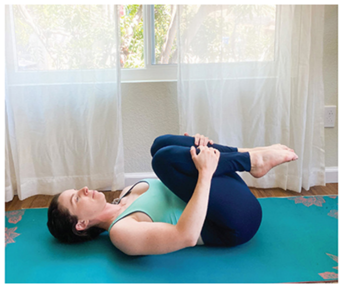
Hình 9.21 Ôm gối về ngực.
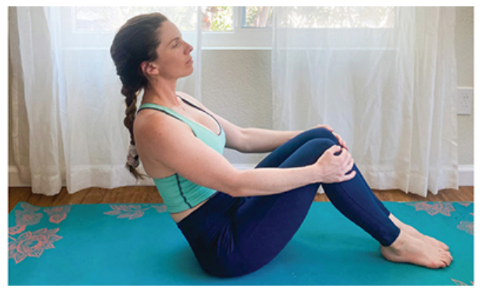
Hình 9.22 Tư thế con thuyền có hỗ trợ.
Hình 9.23 Biến thể tư thế chó úp mặt với đầu gối hơi chùng.
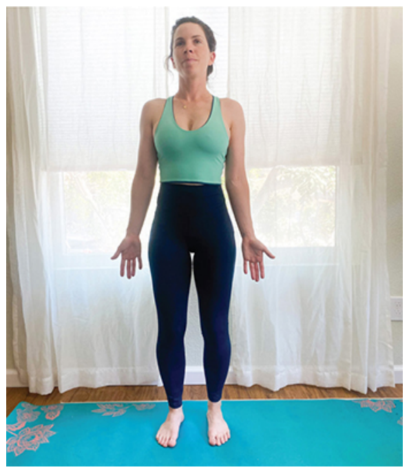
Hình 9.24 Tư thế trái núi với đầu gối hơi chùng nhẹ.
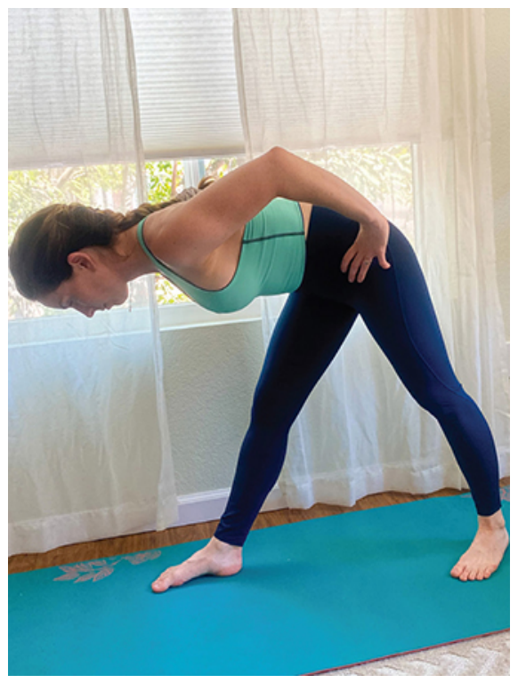
Hình 9.25 Biến thể tư thế tam giác.
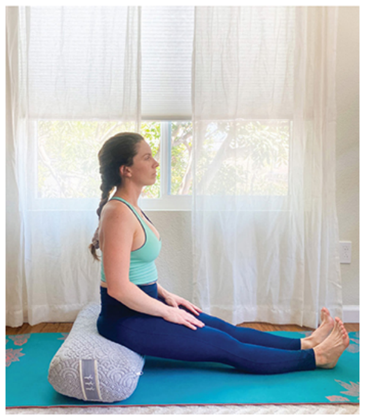
Hình 9.26 Tư thế ngồi có gối ôm hỗ trợ để căn chỉnh cột sống.
VIÊM KHỚP
Viêm khớp ảnh hưởng đến hàng triệu người tại Hoa Kỳ mỗi năm. Khoảng một phần tư người trưởng thành mắc viêm khớp báo cáo phải trải qua cơn đau khớp dữ dội, theo Trung tâm Kiểm soát và Phòng ngừa Dịch bệnh (CDC, 2022b). Ngoài ra, gần một nửa số người trưởng thành bị viêm khớp có cơn đau dai dẳng. Hai dạng viêm khớp chính là viêm khớp dạng thấp và thoái hóa khớp, và cả hai dạng bệnh này đều có thể dẫn đến đau mạn tính.
Viêm khớp dạng thấp là một rối loạn viêm mạn tính ảnh hưởng đến các khớp. Bệnh xảy ra khi hệ miễn dịch của cơ thể tấn công chính các mô của cơ thể. Tình trạng viêm sinh ra có thể gây hại cho các bộ phận khác của cơ thể, ảnh hưởng đến chất lượng cuộc sống (Evans et al., 2013).
Yoga có thể cải thiện chất lượng cuộc sống và sức khỏe cho người bị viêm khớp dạng thấp. Các nhà nghiên cứu từ Đại học California, Los Angeles đã thực hiện một nghiên cứu đánh giá chương trình Iyengar yoga hai buổi mỗi tuần lên các chỉ số sức khỏe ở người mắc viêm khớp dạng thấp (Evans et al., 2013). Can thiệp kéo dài sáu tuần bao gồm 11 người tham gia và 15 người trong nhóm đối chứng nhận chăm sóc thông thường (gồm các chăm sóc thường quy mà người bệnh nhận cho chứng viêm khớp dạng thấp). Những người hoàn thành khóa tập yoga cho thấy sự cải thiện lớn hơn đáng kể về chất lượng cuộc sống, cơn đau, tâm trạng, tình trạng mệt mỏi và sức khỏe tổng quát so với nhóm đối chứng. Đáng chú ý, gần một nửa nhóm tập yoga báo cáo có sự cải thiện có ý nghĩa lâm sàng đối với các triệu chứng viêm khớp. Những cải thiện này vẫn rõ rệt ở lần theo dõi sau hai tháng. Do đó, yoga dường như là một phương pháp điều trị bổ trợ hiệu quả cho bệnh viêm khớp dạng thấp.
Bên cạnh yoga, một tổng quan do các nhà nghiên cứu tại Trường Y Harvard thực hiện cho thấy các can thiệp dựa trên thiền định phần lớn đều hiệu quả trong việc cải thiện các triệu chứng viêm khớp dạng thấp (Koulouris et al., 2018). Qua chín thử nghiệm đối chứng ngẫu nhiên và bốn nghiên cứu khác, thiền định được ghi nhận giúp giảm đau, giảm viêm và giảm mệt mỏi, cũng như cải thiện nhiều chỉ số khác.
Thoái hóa khớp xảy ra khi phần sụn giữa các xương bị bào mòn, gây tổn thương khớp. Cuối cùng, sụn có thể mòn đến mức xương cọ xát trực tiếp vào xương, gây ra tổn thương nghiêm trọng hơn nữa. Hiện nay, Hiệp hội Thấp khớp học Hoa Kỳ và Quỹ Viêm khớp khuyến nghị yoga như một phương pháp điều trị để kiểm soát thoái hóa khớp bàn tay, khớp háng và khớp gối (Kolasinski et al., 2020). Yoga có thể giúp cải thiện khả năng vận động của khớp, khiến các khớp bớt cảm giác cứng hơn.
Các nhà khoa học từ Đại học Công nghệ Sydney ở Úc đã tổng quan chín thử nghiệm đối chứng ngẫu nhiên để hiểu rõ hơn tác động của yoga lên thoái hóa khớp (Lauche et al., 2019). Các nghiên cứu bao gồm 640 người, phần lớn bị thoái hóa khớp chi dưới (chủ yếu là khớp gối). Phân tích cho thấy yoga hiệu quả trong việc cải thiện cơn đau, chức năng và tình trạng cứng khớp ở bệnh thoái hóa khớp gối. Tuy nhiên, các tác giả cũng lưu ý rằng nhiều nghiên cứu trong số này có chất lượng thấp (Lauche et al., 2019).
Chưa có nhiều nghiên cứu được thực hiện về lợi ích của thiền định đối với người bị thoái hóa khớp. Trong một nghiên cứu, các nhà khoa học từ Đại học Tây Virginia đã tiến hành một thử nghiệm lâm sàng ngẫu nhiên nhằm khảo sát tác động của thiền trì chú (mantra meditation) so với việc nghe nhạc lên tình trạng đau khớp gối ở người lớn tuổi bị thoái hóa khớp (Innes et al., 2018). Hai mươi hai người trưởng thành được chia vào nhóm thiền định và nhóm nghe nhạc, và được yêu cầu thực hành 15–20 phút hai lần mỗi ngày trong tám tuần. Cả hai nhóm đều cho thấy sự cải thiện về đau khớp gối, chức năng, tâm trạng, căng thẳng và sức khỏe tổng thể. Khi so sánh hai nhóm với nhau, nhóm thiền định cho thấy sự cải thiện lớn hơn về tâm trạng, giấc ngủ và sức khỏe tâm thần so với nhóm nghe nhạc. Như vậy, thiền trì chú, và có thể cả việc nghe nhạc, có thể là một liệu pháp bổ trợ cho bệnh thoái hóa khớp.
Điểm chính cần nhớ
Viêm khớp dạng thấp là một rối loạn viêm mạn tính ảnh hưởng đến các khớp. Yoga có thể cải thiện chất lượng cuộc sống, cơn đau, tâm trạng và tình trạng mệt mỏi. Thoái hóa khớp xảy ra khi phần sụn giữa các xương bị bào mòn, gây tổn thương khớp. Yoga có thể giúp cải thiện khả năng vận động của khớp, cơn đau, chức năng và tình trạng cứng khớp ở người bị thoái hóa khớp gối. Thiền trì chú cũng có thể mang lại lợi ích cho người bị thoái hóa khớp, dù các nghiên cứu vẫn chưa đưa ra kết luận cuối cùng.
CÁC BÀI TẬP YOGA CHO NGƯỜI BỊ VIÊM KHỚP
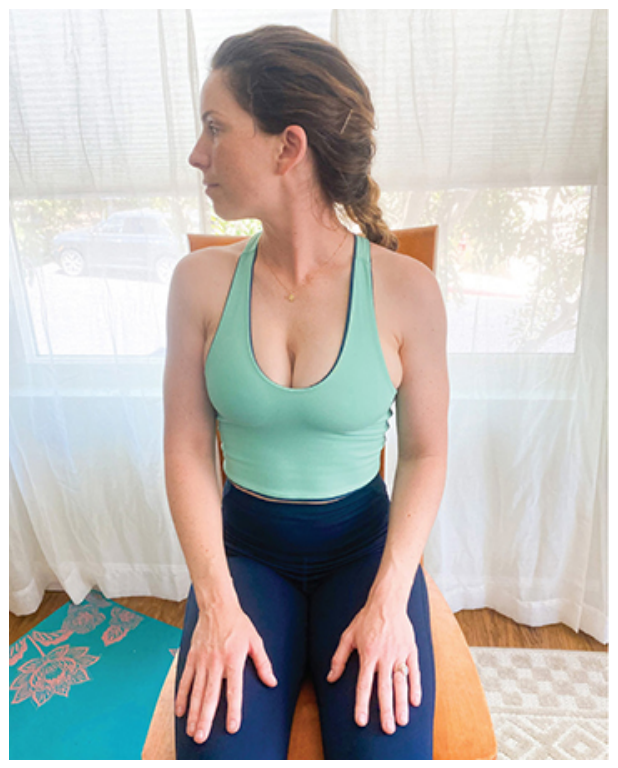
Hình 9.27 Quay đầu sang trái và phải để kéo giãn vùng cổ.
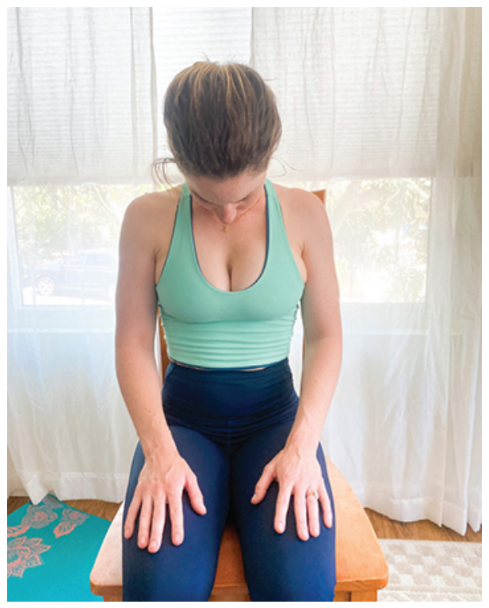
Hình 9.28 Ngước nhìn lên và cúi xuống, chú ý không duỗi quá mức theo cả hai hướng.
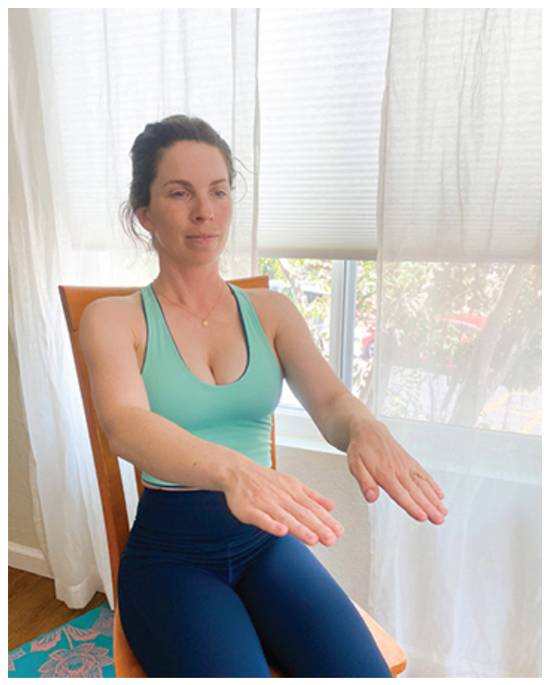
Hình 9.29 Đưa hai tay ra phía trước và nắm các ngón tay lại.
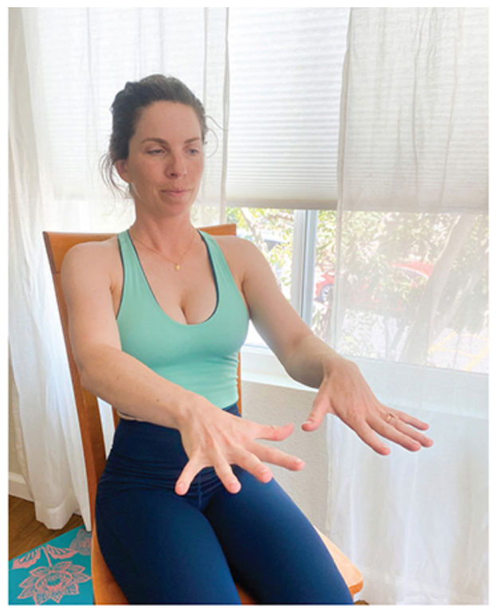
Hình 9.30 Xòe rộng các ngón tay.
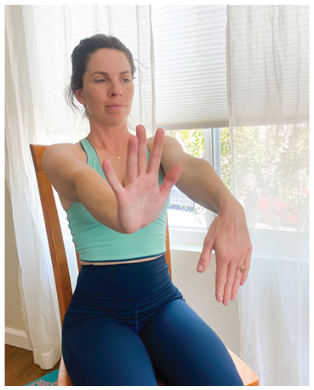
Hình 9.31 Gập bàn tay lên xuống để vận động cổ tay.
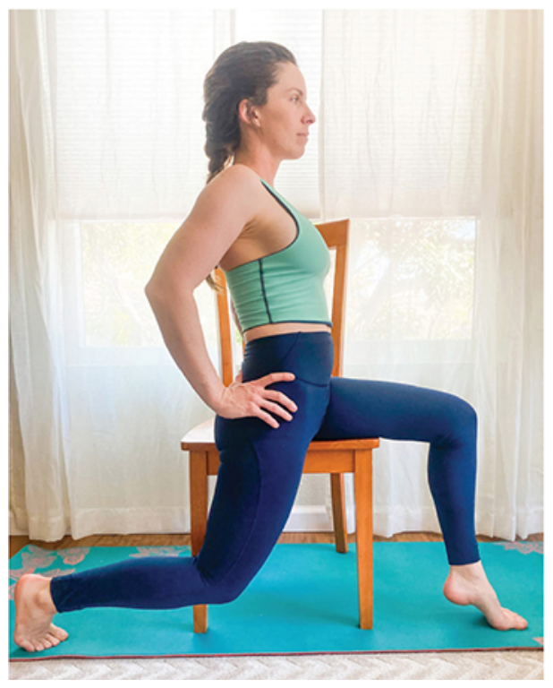
Hình 9.32 Tư thế trường tấn tiến có ghế hỗ trợ.
NGHIỆN
Nghiện do điều trị: Bệnh nhân bị đau mạn tính thường được kê các loại thuốc có tính gây nghiện mạnh, chẳng hạn như opioid, vốn kích hoạt các trung tâm phần thưởng trong não. Lo âu liên quan đến cơn đau cũng dường như có mối liên hệ với tình trạng lệ thuộc thuốc lá ở những người bị đau mạn tính (Ditre et al., 2013).
Nghiện là một bệnh lý y khoa mạn tính có thể điều trị được, liên quan đến những tương tác phức tạp giữa các mạch não, di truyền, môi trường và cuộc sống của một cá nhân, theo Hiệp hội Y học Nghiện Hoa Kỳ (ASAM, 2022). Người mắc chứng nghiện sẽ tiếp tục sử dụng chất gây nghiện ngay cả khi họ biết việc đó sẽ gây hại hoặc dẫn đến những vấn đề khác.
Nghiện gắn liền với những biến đổi về tâm trạng, nhân cách và thay đổi hành vi cũng như các thay đổi về cấu trúc và chức năng của não (Kosten and George, 2002). Một số vùng não phổ biến hơn cả có liên quan đến chứng nghiện là vỏ não trước trán, hạch hạnh nhân và hạch nền – những vùng then chốt của mạng lưới phần thưởng trong não.
Nhắc lại từ các chương trước, vỏ não trước trán là trung tâm điều khiển của não. Vùng rộng lớn bao trùm phần trước của não này đóng vai trò quan trọng trong việc ra quyết định, giải quyết vấn đề và thực thi khả năng tự kiểm soát. Hạch hạnh nhân là trung tâm sợ hãi của não và đóng vai trò trong việc trải nghiệm cảm giác lo âu, bất an xảy ra khi ngừng sử dụng một chất gây nghiện. Vùng này có thể trở nên ngày càng nhạy cảm khi tiếp tục sử dụng chất gây nghiện. Cuối cùng, hạch nền là một phần của trung tâm động lực trong não và giúp xử lý cảm giác khoái lạc; nhóm tế bào thần kinh này cũng tham gia vào việc hình thành các thói quen và nếp sinh hoạt, cả tốt lẫn xấu.
Một số loại thuốc tác động đến nhiều vùng hơn chứ không chỉ các vùng xử lý phần thưởng của não. Các chất như opioid còn nhắm vào thân não, nơi chịu trách nhiệm cho những chức năng cơ bản như hô hấp. Opioid đã được chứng minh là gắn vào các thụ thể tại một nhóm tế bào thần kinh đặc hiệu trong thân não vốn có nhiệm vụ duy trì nhịp thở. Một khi thuốc gắn kết, các tế bào thần kinh này gây rối loạn hô hấp, và cuối cùng dẫn đến ngừng thở, gây ra các ca tử vong do quá liều (Liu et al., 2021).
Nhiều loại thuốc can thiệp vào cách các tế bào thần kinh gửi và nhận thông tin. Ví dụ, nicotine trong thuốc lá đi qua hàng rào máu – não và gắn vào các thụ thể trong não, đánh lừa não trở nên hoạt động mạnh hơn và giải phóng nhiều chất dẫn truyền thần kinh hơn như dopamine và acetylcholine. Trong khi sự gia tăng dopamine củng cố trải nghiệm khoái lạc, sự gia tăng acetylcholine có thể là nguyên nhân làm tăng sự chú ý và nhận thức được quan sát thấy sau khi hút thuốc lá. Sau nhiều lần sử dụng, não bộ quen với một mức độ kích thích nhất định, gọi là sự dung nạp. Do đó, người hút sẽ cần hít ngày càng nhiều nicotine hơn để trải nghiệm những tác động tích cực tương tự. Sự dung nạp khác với tình trạng lệ thuộc, vốn xuất phát từ nhu cầu sinh lý hoặc cảm giác tâm lý rằng một người không thể hoạt động bình thường nếu không sử dụng chất đó.
Yoga đã được chứng minh là hữu ích trong việc điều trị nhiều loại nghiện, bao gồm nghiện rượu, ma túy và nicotine (Walia et al., 2021). Trong một tổng quan gồm tám thử nghiệm đối chứng ngẫu nhiên, các nhà nghiên cứu từ
Đại học Liverpool John Moores và Đại học Exeter ở Vương quốc Anh nhận thấy yoga có thể làm giảm căng thẳng và các hành vi nghiện đồng thời cải thiện lòng tự trọng và khả năng tự kiểm soát (Posadzki et al., 2014). Dù nhiều nghiên cứu được tổng quan có chất lượng thấp, các kết quả vẫn rất đáng khích lệ rằng yoga có thể là một công cụ hữu ích để điều trị chứng nghiện.
Nghiện nicotine: Việc sử dụng các phương pháp thực hành chiêm nghiệm để điều trị nghiện nicotine đã được nghiên cứu rộng rãi, và kết quả cho thấy thiền định, và có thể cả yoga, có thể làm giảm việc sử dụng thuốc lá.
Nicotine là thành phần gây nghiện trong thuốc lá, và ước tính có khoảng 1,3 tỷ người sử dụng thuốc lá trên toàn thế giới (World Health Organization, 2021). Bất chấp sự phổ biến rộng rãi, hút thuốc lá là nguyên nhân hàng đầu gây bệnh tật, khuyết tật và tử vong có thể phòng ngừa được tại Hoa Kỳ, đồng thời là nguyên nhân hàng đầu gây tử vong có thể phòng ngừa được trên toàn cầu (Brewer et al., 2011). Các nghiên cứu cho thấy nhiều người hút thuốc muốn bỏ thuốc nhưng cảm thấy không thể làm được.
Căng thẳng là một tác nhân kích hoạt lớn dẫn đến việc hút thuốc lá. Khi não bộ chịu căng thẳng, vỏ não trước trán ngừng hoạt động đúng cách. Thiền chánh niệm có thể hữu ích trong việc kết nối người hút thuốc với trải nghiệm của chính họ. Điều này có thể giúp hạ thấp mức độ căng thẳng và làm dịu cảm giác thèm hút thuốc. Học cách chú tâm hơn vào trải nghiệm của bản thân cũng giúp người hút thuốc nhận thức rõ hơn về cảm xúc của mình và hiểu được lý do ngay từ đầu khiến họ với lấy điếu thuốc. Thiền định cũng giúp tăng cường khả năng tự kiểm soát, một khía cạnh then chốt để vượt qua bất kỳ chứng nghiện nào.
Nhà khoa học thần kinh và bác sĩ tâm thần chuyên về nghiện Judson Brewer, tác giả cuốn *The Craving Mind* (tạm dịch: *Tâm trí Thèm muốn*), là người tiên phong trong việc khảo sát cách thiền chánh niệm tác động đến chứng nghiện, đặc biệt là nghiện nicotine. Brewer chia nhỏ chứng nghiện nicotine (hoặc bất kỳ thói quen có hại nào) thành ba bước chính: 1) tác nhân kích hoạt, 2) hành vi và 3) phần thưởng. Ví dụ, bạn có thể cảm thấy buồn (tác nhân kích hoạt), nên bạn lấy một ít kem từ tủ đông (hành vi) và rồi bạn bắt đầu thấy dễ chịu hơn (phần thưởng). Cơ chế này hoạt động tương tự với nicotine. Bạn có thể cảm thấy căng thẳng (tác nhân kích hoạt), với lấy một điếu thuốc (hành vi) và rồi cảm thấy nhẹ nhõm phần nào (phần thưởng). Mỗi lần quá trình này diễn ra, não bộ lại được rèn luyện và các mạch thần kinh được nối lại, cuối cùng dẫn đến việc hình thành một thói quen.
Nhóm nghiên cứu của Brewer đã tiến hành nhiều nghiên cứu để xem liệu chánh niệm có thể giúp mọi người cai thuốc lá hay không. Trong các nghiên cứu đó, nhóm nghiên cứu khuyến khích người tham gia nuôi dưỡng sự tò mò. Họ cho phép người tham gia tiếp tục hút thuốc miễn là người hút tập trung cảm nhận xem việc hút một điếu thuốc thực sự có cảm giác như thế nào. Brewer phát hiện rằng khi mọi người đưa sự chú ý vào mùi và vị của thuốc lá, việc hút thuốc trở nên kém hấp dẫn hơn nhiều (Brewer, 2016).
Trong một nghiên cứu mang tính bước ngoặt, nhóm của Brewer nhận thấy việc rèn luyện chánh niệm hiệu quả gấp đôi so với liệu pháp tiêu chuẩn vàng trong cai thuốc lá. Thử nghiệm đối chứng lâm sàng ngẫu nhiên chặt chẽ này gồm 88 người trưởng thành lệ thuộc nicotine (Brewer et al., 2011). Các nhà khoa học muốn xem liệu chánh niệm có thể mang lại lợi ích tương đương phương pháp điều trị Freedom from Smoking (Thoát khỏi Thuốc lá) của Hiệp hội Phổi Hoa Kỳ hay không. Người tham gia được phân ngẫu nhiên vào từng nhóm, và các buổi điều trị diễn ra hai lần mỗi tuần trong một tháng.
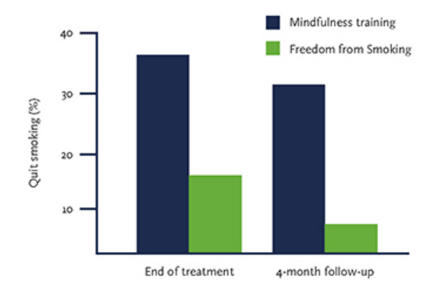
Hình 9.33 Những người hoàn thành khóa rèn luyện chánh niệm có khả năng bỏ thuốc lá cao hơn nhóm đối chứng Freedom from Smoking.
Những người tham gia hút trung bình 20 điếu thuốc mỗi ngày khi bắt đầu nghiên cứu. Những cá nhân hoàn thành khóa rèn luyện chánh niệm cho thấy mức độ giảm sử dụng thuốc lá nhiều hơn trong quá trình điều trị và tại lần tái khám sau bốn tháng so với nhóm điều trị Freedom from Smoking (Hình 9.33). Đây là một nghiên cứu chặt chẽ, được thiết kế bài bản, và kết quả gợi ý rằng việc rèn luyện chánh niệm thậm chí có thể hiệu quả hơn trong cai thuốc lá so với các liệu pháp tiêu chuẩn hiện hành như Freedom from Smoking (Brewer et al., 2011).
Yoga cho chứng nghiện nicotine cũng đã được nghiên cứu, dù kết quả chưa thật sự rõ ràng bằng. Trong một thử nghiệm lâm sàng lớn gồm 227 người tham gia, các nhà nghiên cứu từ Đại học Brown đã khảo sát xem yoga có thể là một công cụ hỗ trợ hiệu quả cho việc cai thuốc lá hay không (Bock et al., 2018). Những người tham gia nghiên cứu hút trung bình 17 điếu mỗi ngày và được phân ngẫu nhiên vào chương trình Iyengar yoga kéo dài tám tuần (hai buổi mỗi tuần) hoặc các lớp chăm sóc sức khỏe tổng quát làm nhóm đối chứng. Tất cả người tham gia cũng đều trải qua một chương trình cai thuốc lá nhận thức – hành vi. Việc theo dõi được thực hiện ở tuần thứ tám, tháng thứ ba và tháng thứ sáu.
Kết quả cho thấy nhóm tập yoga có khả năng bỏ thuốc lá cao hơn 37 phần trăm so với nhóm chăm sóc sức khỏe tổng quát. Các nhà khoa học cũng ghi nhận hiệu ứng liều lượng ở nhóm yoga, nghĩa là mỗi buổi tập yoga tham gia thêm giúp tăng khả năng bỏ thuốc lá của người tham gia lên khoảng 12 phần trăm (Bock et al., 2018).
Điểm chính cần nhớ
Nghiện là một bệnh lý y khoa mạn tính có thể điều trị được, liên quan đến những tương tác phức tạp giữa các mạch não, di truyền, môi trường và trải nghiệm sống của một cá nhân. Yoga có thể làm giảm căng thẳng và các hành vi nghiện đồng thời cải thiện lòng tự trọng và khả năng tự kiểm soát. Yoga và thiền định là những lựa chọn thay thế hiệu quả để điều trị nghiện nicotine. Thực hành thiền chánh niệm có thể giúp tái nối mạch não để giảm căng thẳng và cơn thèm muốn.
TÀI LIỆU THAM KHẢO
American Association of Neurological Surgeons (AANS), 2020. Traumatic brain injury. Có tại:
https://www.aans.org/Patients/Neurosurgical-Conditions-and-Treatments/Traumatic-BrainInjury#:~:text=An%20estimated%2013.5%20million%20individuals,hospitalizations%20for%20 spinal%20cord%20injury American Society of Anesthesiologists, 2021. Chronic pain. Có tại: https://www.asahq.org/madeforthismoment/pain-management/types-ofpain/chronic/#:~:text=Chronic%20pain%20is%20pain%20that,lasting%20three%20months%20o r%20longer Acabchuk, R.L., Brisson, J.M., Park, C.L., Babbott-Bryan, N., Parmelee, O.A., & Johnson, B.T.,
2020. Therapeutic effects of meditation, yoga, and mindfulness-based interventions for chronic symptoms of mild traumatic brain injury: a systematic review and meta-analysis. Applied Psychology: Health and Well-Being, 13(1), pp.34–62. American Society of Addiction Medicine (ASAM), 2022. Definition of addiction. Có tại:
www.asam.org/quality-care/definition-of-addiction Ates, G., Goldberg, J., Currais, A., & Maher, P., 2020. CMS121, a fatty acid synthase inhibitor, protects against excess lipid peroxidation and inflammation and alleviates cognitive loss in a transgenic mouse model of Alzheimer’s disease. Redox Biology, 36, p.101648. Bhattacharyya, K. K., Andel, R., & Small, B.J. 2021. Effects of yoga-related mind–body therapies on cognitive function in older adults: a systematic review with meta-analysis. Archives of Gerontology and Geriatrics, 93, Article 104319. Blumenrath, S., 2020. The neuroscience of touch and pain. Có tại: https://www.brainfacts.org/thinking-sensing-and-behaving/touch/2020/the-neuroscience-oftouch-and-pain-013020 Bock, B.C., Dunsiger, S.I., Rosen, R.K., Thind, H., et al., 2018. Yoga as a complementary therapy for smoking cessation: results from BreathEasy, a randomized clinical trial. Nicotine & Tobacco Research, 21(11), pp.1517–1523. Brenes, G.A., Sohl, S., Wells, R.E., Befus, D., Campos, C.L., & Danhauer, S.C., 2019. The effects of yoga on patients with mild cognitive impairment and dementia: a scoping review. The American Journal of Geriatric Psychiatry, 27(2), pp.188–197. Brewer, J., 2016. A simple way to break a bad habit, TED Talks. Có tại:
https://www.youtube.com/watch?v=-moW9jvvMr4 Brewer, J.A., Mallik, S., Babuscio, T.A., Nich, C., et al., 2011. Mindfulness training for smoking cessation: results from a randomized controlled trial. Drug and Alcohol Dependence, 119(1–2), pp.72–80. Bushnell, M.C., Čeko, M., & Low, L.A., 2013. Cognitive and emotional control of pain and its disruption in chronic pain. Nature Reviews Neuroscience, 14(7), pp.502–511. Cavalera, C., Rovaris, M., Mendozzi, L., Pugnetti, L., et al., 2018. Online meditation training for people with multiple sclerosis: a randomized controlled trial. Multiple Sclerosis Journal, 25(4), pp.610–617. Centers for Disease Control and Prevention (CDC), 2022a. Stroke facts. Có tại:
www.cdc.gov/stroke/facts.htm Centers for Disease Control and Prevention (CDC), 2022b. Joint pain. Có tại:
www.cdc.gov/arthritis/pain Cherkin, D.C., Sherman, K.J., & Balderson, B.H., 2016. Effect of mindfulness-based stress reduction vs cognitive behavioral therapy or usual care on back pain and functional limitations in adults with chronic low back pain. JAMA, 315(12), p.1240. Dahlhamer, J., Lucas, J., Zelaya, C., Nahin, R., et al., 2018. Prevalence of chronic pain and high impact chronic pain among adults — United States, 2016. Morbidity and Mortality Weekly
Report, 67(36), pp.1001–1006. Ditre, J.W., Zale, E.L., Kosiba, J.D., & Zvolensky, M.J., 2013. A pilot study of pain-related anxiety and smoking dependence motives among persons with chronic pain. Experimental Clinical Psychopharmacololgy, 21(6), pp.443–449. Donnelly, K.Z., Baker, K., Pierce, R., St. Ivany, A.R., Barr, P.J., & Bruce, M.L., 2019. A retrospective study on the acceptability, feasibility, and effectiveness of LoveYourBrain Yoga for people with traumatic brain injury and caregivers. Disability and Rehabilitation, 43(12), pp.1764–1775. Donnelly, K.Z., Goldberg, S., & Fournier, D., 2019. A qualitative study of LoveYourBrain Yoga: a group-based yoga with psychoeducation intervention to facilitate community integration for people with traumatic brain injury and their caregivers. Disability and Rehabilitation, 42(17), pp.2482–2491. Evans, S., Moieni, M., Lung, K., Tsao, J., et al., 2013. Impact of Iyengar yoga on quality of life in young women with rheumatoid arthritis. The Clinical Journal of Pain, 29(11), pp.988–997. Friedman, A., Kaufer, D., Shemer, J., Hendler, I., Soreq, H., & Tur-Kaspa, I. 1996. Pyridostigmine brain penetration under stress enhances neuronal excitability and induces early immediate transcriptional response. Nature Medicine, 2(12), pp.1382–1385. Garrett, R., Immink, M.A., & Hillier, S., 2011. Becoming connected: the lived experience of yoga participation after stroke. Disability and Rehabilitation, 33(25–26), pp.2404–2415. Groessl, E.J., Liu, L., Chang, D.G., Wetherell, J.L., et al., 2017. Yoga for military veterans with chronic low back pain: a randomized clinical trial. American Journal of Preventive Medicine, 53(5), pp.599–608. Hilton, L., Hempel, S., Ewing, B.A., Apaydin, E., et al., 2016. Mindfulness meditation for chronic pain: systematic review and meta-analysis. Annals of Behavioral Medicine, 51(2), pp.199–213. Innes, K.E., Selfe, T.K., Kandati, S., Wen, S., & Huysmans, Z., 2018. Effects of mantra meditation versus music listening on knee pain, function, and related outcomes in older adults with knee osteoarthritis: an exploratory randomized clinical trial (RCT). Evidence-Based Complementary and Alternative Medicine, 2018, pp.1–19. Johns Hopkins Medicine, 2022. Traumatic brain injury. Có tại: https://www.hopkinsmedicine.org/health/conditions-and-diseases/traumatic-brain-injury Kolasinski, S.L., Neogi, T., Hochberg, M.C., Oatis, C., et al., 2020. 2019 American College of
Rheumatology/Arthritis Foundation guideline for the management of osteoarthritis of the hand, hip, and knee. Arthritis & Rheumatology, 72(2), pp.220–233. Kosten, T., & George, T., 2002. The neurobiology of opioid dependence: implications for treatment.
Science & Practice Perspectives, 1(1), pp.13–20. Koulouris, A., Dorado, K., McDonnell, C., Edwards, R.R., & Lazaridou, A., 2018. A review of the efficacy of yoga and meditation-based interventions for rheumatoid arthritis. OBM Integrative and Complementary Medicine, 3(3). Kross, E., Berman, M.G., Mischel, W., Smith, E.E., & Wager, T.D., 2011. Social rejection shares somatosensory representations with physical pain. Proceedings of the National Academy of Sciences, 108(15), pp.6270–6275. Kunkle, B.W., Grenier-Boley, B., Sims, R., Bis, J.C., et al., 2019. Genetic meta-analysis of diagnosed
Alzheimer’s disease identifies new risk loci and implicates AB, Tau, immunity and lipid processing. Nature Genetics, 51(3), pp.414–430. Larkin, M., 2000. Meditation may reduce heart attack and stroke risk. The Lancet, 355(9206), p.812. Lauche, R., Hunter, D.J., Adams, J., & Cramer, H., 2019. Yoga for osteoarthritis: a systematic review and meta-analysis. Current Rheumatology Reports, 21(9), p.47.
Lawrence, M., Celestino Jr., F.T., Matozinho, H.H.S., Govan, L., Booth, J., & Beecher, J., 2017. Yoga for stroke rehabilitation. Cochrane Database of Systematic Reviews, 2017(12), CD011483. Levin, A.B., Hadgkiss, E.J., Weiland, T.J., Jelinek, G.A., et al., 2014. Meditation as an adjunct to the management of multiple sclerosis. Neurology Research International, 2014, pp.1–10. Liu, S., Kim, D.-I., Oh, T.G., & Pao, G.M., 2021. Neural basis of opioid-induced respiratory depression and its rescue. Proceedings of the National Academy of Sciences, 118(23), e2022134118. Minvaleev, R.S., Bogdanov, R.R., Bahner, D.P., & Levitov, A.B., 2019. Headstand (Sirshasana) does not increase the blood flow to the brain. The Journal of Alternative and Complementary Medicine, 25(8), pp.827–832. Mischkowski, D., Crocker, J., & Way, B.M., 2019. A social analgesic? Acetaminophen (paracetamol)
reduces positive empathy. Frontiers in Psychology, 10, p.538. National Multiple Sclerosis Society, 2022. Types of MS. Có tại: https://www.nationalmssociety.org/What-is-MS/Types-of-MS Posadzki, P., Choi, J., Lee, M.S., & Ernst, E., 2014. Yoga for addictions: a systematic review of randomised clinical trials. Focus on Alternative and Complementary Therapies, 19(1), pp.1–8. Qaseem, A., Wilt, T.J., McLean, R.M., & Forciea, M.A., 2017. Noninvasive treatments for acute, subacute, and chronic low back pain: a clinical practice guideline from the American College of Physicians. Annals of Internal Medicine, 166(7), p.514. Senatorov, V.V., Friedman, A.R., Milikovsky, D.Z., Ofer, J., et al., 2019. Blood–brain barrier dysfunction in aging induces hyperactivation of TGFΒ signaling and chronic yet reversible neural dysfunction. Science Translational Medicine, 11(521), eaaw8283. Sharma, A., Agarwal, S., Broatch, J., & Raja, S.N., 2009. A web-based cross-sectional epidemiological survey of complex regional pain syndrome. Regional Anesthesia and Pain Medicine, 34(2), pp.110–115. Strauss, C., Cavanagh, K., Oliver, A., & Pettman, D., 2014. Mindfulness-based interventions for people diagnosed with a current episode of an anxiety or depressive disorder: a meta-analysis of randomised controlled trials. PLoS ONE, 9(4), e96110. Stump, E., 2009. How Natasha Richardson’s death put brain injury in the spotlight. Có tại:
https://www.brainandlife.org/articles/the-tragic-death-of-natasha-richardson Thayabaranathan, T., Andrew, N.E., Immink, M.A., Hillier, S., et al., 2017. Determining the potential benefits of yoga in chronic stroke care: a systematic review and meta-analysis. Topics in Stroke Rehabilitation, 24(4), pp.279–287. Tilbrook, H.E., Cox, H., Hewitt, C.E., Kang’ombe, A.R., et al., 2011. Yoga for chronic low back pain. Annals of Internal Medicine, 155(9), p.569. Walia, N., Matas, J., Turner, A., Gonzalez, S., & Zoorob, R., 2021. Yoga for substance use: a systematic review. The Journal of the American Board of Family Medicine, 34(5), pp.964–973. Wathugala, M., Saldana, D., Juliano, J.M., Chan, J., & Liew, S.-L., 2019. Mindfulness meditation effects on poststroke spasticity: a feasibility study. Journal of Evidence-Based Integrative Medicine, 24, 2515690X19855941. Wells, R.E., Yeh, G.Y., Kerr, C.E., Wolkin, J., et al., 2013. Meditation’s impact on default mode network and hippocampus in mild cognitive impairment: a pilot study. Neuroscience Letters, 556, pp.15–19. Wieland, L.S., Skoetz, N., Pilkington, K., Vempati, R., D’Adamo, C.R., & Berman, B.M., 2017.
Yoga treatment for chronic non-specific low back pain. Cochrane Database of Systematic Reviews, 2017(1), CD010671. World Health Organization, 2021. Tobacco. Có tại: https://www.who.int/news-room/fact sheets/detail/tobacco